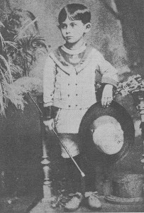

|
ALL THE SHIT I SHOULD HAVE DELETED
|
|
ENTRY 80: May 28. 2024
|
Beatrice
There's something I recognize
your skin beneath your eyes draws closed like mine
and nothing catches you surprised
through the distance you hold tight
not even my look to you
we are mirrors that only we see
could we see each other too?
each day we wake into the dream
and watch each other across the water
I see the ripples that follow you like anger
I watch you thread through the crowd
always moving away too soon
nobody else even sees us here, Beatrice
we are together and always alone
I see you've stopped eating
let me hold you, let me feed you
let me place myself inside
and teach you how to eat again
crouch from me, hide from me
you always go to sleep too quickly
I see your fingers torn together
loosen your grip and let in sweetness, Beatrice
We cannot slip through with our
hands clenched so tight
we do not speak
but we hear the answer ringing
Of course you'll help yourself
and so will I
as we watch each other fold
open and closed
biting down on everything.
|
|
ENTRY 79: May 21. 2024
|
I got back from Poland yesterday, don't ask why I was there, actually you can, it's because I'm going through my 6'8" philosophy student phase.
I got kind of upset after poetry last week because I performed the thing about CAP, my ED, idk what other acronyms are in there, I-M-C-R-A-Z-Y and nobody got it,
I think people found it boring and like okay you went to camp? what even is this? The dude who cognitively terrorizes me at poetry now (S) just left and didn't
even say anything about it. And that, it hurt my feelings a bit because like hey guys I Have An Eating Disorder. but whatever, idk why I even need people to care
about that, I guess not everyone has the same preoccupation with food, body, disorder, eating, thinking, feeling, and you know that's alright-
Returning to Poland, I got an airbnb in this coastal town (quaint) and just walked around alone for two days, I ate from grocery stores and gas stations and
had a real drifter vibe going, I even brought my guitar except it's electric which maybe makes it look less Chris Mccandless and more just stupid, or
just very punk rock, idk. I played my guitar one morning next to a beautiful stream, one thing they have in Poland is birds and bugs let me tell you,
and that was real-nice until a fisherman came by and startled me and then I got self concious sitting in the weeds with an electric guitar trying to
convince myself it's alright to be singing because 'everyone can sing'
I often have the thought that my throat chakra is blocked, this image is vivid for me, I am afraid to sing because of my throat chakra being blocked. I don't
even know anything about chakras except that package with all the rocks representing the different chakras sold at every gift shop and I think I like imagining
I can't sing because there's a rock in my throat, or hesitation at least. I think if I could sing I'd be an asshole though, but then again I already am, hence the
philosophy books-
Let's return to love for a moment. Sometimes I'm trying to have a conversation with someone and I get distracted because I think 'yeah, there's noone like X, I
will never find someone like them, look around, is there anyone like them here?' and then I'm scanning my surroundings like some kind of frightened animal (a dear[sic])
and the person I'm talking to pauses to let me respond but I actually don't know what they said because I got preoccupied with this so I say 'uh huh' and my grip on
other human relationships loosens, and in this way I'm torn apart by love. The scariest thing is that I'm turning into such an asshole, I know I just said that but
I really. I'm giving [redacted: my father] with my fierce independence and dedication to thinking I'm the smartest mf in the room. Kind of an incel type energy,
like no I'm alone because I choose to be, when actually I'm just alone because I'm still feeling the rippling of their presence in my life, and it is true,
I haven't met someone like them yet, but that doesn't mean I never will. I think this is the interesting thing about time right now:
I can believe that things will happen in the future:
But now I am struggling against the casing, the shell, the molt, it is scary being stuck here, although the dream begins only outside, with
meeting you, who will someday read this and laugh, and with changing myself, who will someday laugh at this too.
|
|
ENTRY 78: May 15. 2024
|
In the Field
We are at the Walmart on base, he grabs a styrofoam cooler from the shelf and holds it out to me, skin hanging from a long face, gaunt from something,
I can guess, retired air-force pilot now in the commercial sector, my dad loves to have him over, he laughs at me while we are out of uniform,
he touches me with the styrofoam, saying come on college girl I take the cooler and say nothing, he's known me since I was 14, but he looks at me differently now.
We drive far into the woods, 100 miles and we are still on base. We pass many tarmacs of jets and tanks, miles of land is bare dirt surrounded
by electrified wire hung with signs with red stars and warnings of Unexploded Ordnance, I think of a story my cousin told me about the Navy,
that at the end the year they throw all the boxes of ammunition overboard, so nobody finds out they haven't shot it all.
We make camp, Col. Watson is sitting by the fire, his wife comes in from West Virginia tomorrow. I turn to pick up a canvas tent and when I turn back he's got this look,
he's yelling, mouth purple with spit, he's pointing at my shorts, telling me I need to change, my skin is a translucent white shell,
I change.
We are supposed to find the black box. We aren't allowed to use GPS and nobody wants to count paces so
we pull a white cord with us everywhere, one person takes the front while
the marker stays and lets the cord pass through their hands, when the cord is taunt the marker moves to the front and holds the cord again, counting the lengths,
we follow our heading, the blackberry bushes scrape up our arms, we check our compasses. The first week the black box is across a
field, then an hour away, then a day away. The last days we will need to camp by ourselves,
Col. Watson gives us peanut butter, jelly, and pilot bread, which is hard tack he buys from the surplus store. This will be our meals for two days, and
an MRE if we brought one. Then we march away with our cord, the pulling has become quiet, the hand offs are easy now and we hardly need to speak to each other,
but every time I take the cord from Ashton she tells me about the animals she saw; rabbit, hawk, fire ants, and we keep track of that too.
At night I string a tarp to a tree with paracord and tie it with a tauntline hitch, Ashton asks me to tie hers too but I do it wrong and her tarp
collapses in the wind that night, the next night we just make one shelter, I hold on to her in my sleeping bag and we look through the gap to
see the stars bulging together in a cylinder, the arm of the milky way, the chop of a helicopter cuts through,
but soon we forget where we are again.
After 10 days in the field I'm back home, there's something wrong with me, something stuck like a seed, Watson is hosting a debreif
meeting at his house and I don't go, I realize that my body looks different, I'd never changed my body on my own before, a rope tightens in my subconcious,
between force and reaction. I go back to the base only one more time, I'm supposed to be there for a conference but I get lost,
circling the on-base apartments, balconies bowed from the rain, the parking lots
filled with new Camaros, I pull into a dry lot next to a powerstation and check the directions but my car no longer starts, the engine never turning over,
just stalling over and over as the sun presses down, I sit there all afternoon, not trying the key anymore but just looking into the
woods as the wind pulls the trees, I don't even think of calling someone, it doesn't seem to matter.
The conference has been over for hours when I look down and realize that the car was in drive. I put it in park and
start it easily, then go far away.
|
|
ENTRY 77: May 14. 2024
|
Visitor
I walk through the door of a small wooden house outside of town, sitting at the edge of deep red marsh. The dream begins on the other
side of the door,
dark faces sit around tables and fall out of sight, it's my high school reunion. As I step through the door a boy appears at my side.
He talks with me and stands with me as though he is my friend but we don't know each other, he must like me, I think, but he doesn't even know me.
We walk through a garden and he asks what I do, I don't want
to talk to him so I say nothing. Oh, you won't even give me that? Where are you from at least?
I live in Berlin. I expect the conversation to be over, wait for him to say he lives in Covington but he doesn't,
Oh, I bet you write poetry there. He laughs,
I say nothing, his face is lightened from nowhere, the way light works in dreams, like a spotlight. How does he know that? We find tables of people
surrounding one face I barely know, I speak with them and they don't remember me, I see everyone's confusion, but the boy is at my side, he talks to the
tables of people and laughs with me, we walk through the dark square outside, all roads curve out of sight, a large man is laughing and I say,
the old football coach, the boy says, I know, he begins to look like S, then he is in a circle of his friends, they are all young, thin
with curly hair, I wonder why the boy is here, he must have just started highschool,
The boy is kidding me, Why won't you tell me about yourself? With all of your biology and poetry you must have a lot to say.
I never told him those things, I wonder how he knows to stay with me, how does he know that we'll be friends.
I begin to like talking with him, I like his laugh,
I start to wonder, maybe he'd like to go to that abandoned house with me, maybe we could go now in the dark and it would be beautiful and
romantic and maybe there is actually more romance and intrigue and mystery here than in Berlin, maybe I didn't need to leave to find that,
We are in the hallway outside the door, the boy is pulling huge cases of luggage, I realize it will not happen. I wonder why he won't stay with me,
why he doesn't even ask for my name or my phone number. Standing against the inside of the door the boy looks suddenly older than me, his face is
taunt and lines have appeared around his mouth and eyes, he looks down at me,
I know I need to ask something, What year are you anyway? He smiles and says, Oh, I don't remember. I know that
this will be our last time meeting so I say I'll see you soon. I don't understand how he can leave, why was he by my side all night if he
won't stay? The man smiles, reading this thought, and walks out the door. It is 7 am now and almost everyone is gone, I go to my bag on the couch and wonder where my brother is, he appears with a purple bruise spread across his face like a
birth mark, his skin is slick with water. Eric and I were just out, we probably drank a bit too much, but you know, we were driving into town..
Eric appears next to him, a small man with huge glassy eyes like a fish, he looks past me at nothing.
I wake up and make coffee in the kitchen, I'm wondering if I should tell my roommate
about my dream and she tells me she had a strange night, found her Totoro she always sleeps with across the room when she woke up. I tell her about the boy I didn't know
walking through my high school reunion with me, as I'm telling it I realize a third interpretation but I keep that to myself. When I finish she says,
I think dreams are what we make of them,
Discussion Questions:
1) Fluidity of Love
The boy doesn't know me, when we meet we are strangers, and yet he stays with me, why? I want this ease and certainty of connection, the boy needs no
reason or preparation he simply knows that we work and we do. He trusts his intuition and stays with people that he likes, without needing to know why or how we
work together, without needing to go anywhere, this is S of course, and my confusion when the boy leaves is the same one I feel when S leaves every week,
I've been taught to expect some linearity or sense in relationships, that movements are signals, but they shouldn't be. In the dream, the boy moves within the
bounds of each second and does not need his actions to tie together in some grand sense of self, he is here and then he leaves when it is time.
2) The Reunion in Dresden
As I explained the role of the boy to R this morning I realized that I had been the boy this last winter, at K's side and moving table to table at their
highschool reunion. This moves into recent interpretations of K, in which I'm realizing how little of that time I was concious of. I had to wait at my old U5 stop yesterday
and felt a strange nauseating anxiety. Things that I fixated on while in my first-months disassociative haze
are strange and tainted now, and I think K is like that. While I still think of them constantly, the thought of talking with them or things being in any way
like this winter is terrifying. This was brought to the surface yesterday when I talked to some of the friends I met on New Year's, I wonder how different I seem
to them now, I don't feel connected with that other person at all, as though they were a ghost that I don't recognize.
3) The Boy as My Past and Future Self
Of course, the obvious interpretation is the boy as a visitation from my future self. I had hoped to start making my T appointment this morning before I got a
headache, went back to sleep and had the dream. The boy is a guiding figure coming to pull me from my past (highschool reunion being a particularly on-the-nose
representation) and kindly walk with me to the future, manhood/the open door. The value of this interpretation is the boy's patience. He does not need to rush me
or even know why I'm speaking with the people I am, he stands at my side regardless and views my interactions with my past with curiosity and interest rather
than forcing me to the door. He leaves because he knows that I can find the door on my own.
|
|
ENTRY 75: May 7. 2024
|
I Too Will Take My Revenge On Seattle
Everything looks like everything else, and that's why my fourth grade teacher said I was good with imagery. But luckily nothing is ever really
like anything else, and that's what gives us things to say.
I want to talk about angels but that seems silly now, since you would never think of it like that, so maybe I'll talk about the body of a
whale being the forest where we grew up, and that being the long white arms which kept you safe that night when I was far away.
I imagine you walked home steady, and simple, and it seems wrong to say anything about that night but talk about the silver hand of the angel
who helped you home and up the crevices of the wall, soft as snow, never letting you feel afraid or confused and who remains now in the lines
of your hand when you start to wonder what has changed.
A woman opens her apartment window and I see her skin against the white pores of the wall behind her, the sun illuminates her looking down
at her hands in the sink as she washes dishes high above me, I hear no sound, the sun is going down and it is summer, I am trying to write about angels
and I can't, so I write about this woman in the window, and think that I would like to walk here again tomorrow.
|
|
ENTRY 74: May 5. 2024
|
There's A Knocking At The Door That Won't Go, Excuse Me But Do I Know You?
I turn off the Miles Davis and begin building. Below ground, I begin building. I wrote that once, so I can't write it again.
There's lots of things to say, some about the Riviera Apartments, those apartments on the side of the highway I'm always on about,
set back in a teardrop cul-de-sac, row-like, low roofs and sharp doors with silver numbers that shone on sunny days as I drove past, sixteen and always busy,
sun lighting up the tan sheet walls catching on the windows and staying insects between the panes, but the real show was at night, streetlights strung
down the lot, light beads, round bodies that created the Riviera Apartments in the wet darkness, each night like that, clicking heels on the
sidewalk, I rolled down my window to listen, but what did I know then?
I write about streetlights the way Bukowski writes about legs. When I drink, the next morning my piss smells sweet.
What did I know then? Pretty girl I guess, she set up the camera to pose like a girl under an umbrella, maybe people will like me then, she
thought, and the photo looked very serene, her umbrella tilted back and her looking up at what might have been rain.
Can we be honest for a moment? I struggle to speak, I sit in the chair at my friend's house (I'm cat sitting) and begin to write fervently,
the night before we are sitting around the table and the hands (aren't they really needles?) of the clock stop, 'your clock has stopped' Seowon
points out, 'it always does that', an hour later Seowon screams as the hands run forward on their own, slipping down from twelve to three, I had
said I thought about things like fractals, but I don't really know, I stopped talking somewhere back and was only listening, I said, 'that's really
really scary' Seowon looked right at me and said 'Oh, you don't look real anymore', then I didn't. The room becomes plastic, words do things.
I hope I don't know myself, like back then when I held up that silly umbrella. Because right now there's a lot of hatred, I really can't catch a break.
'What's going on with me?' I think, and try and talk to you but just start wondering what the point of speaking is, like asking 'do you believe in God?'
we now all agree it's all in our head, that's queer thinking, so I start to wonder about talking, if I'm never conveying information except for a recipe
once in a while, or telling you to get away from me, but what else do I know?
So what about the Riviera Apartments? I told you about them because I used to wonder if I would live there one day, twenty minutes from my parents house
and off the highway outside Seattle, near grey-green parks with salmon in the streams, nobody ever got my obsession with the Riviera Apartments but my small hands
on the steering wheel liked to pass by, only to wonder about 'someday', the place I am now, a strange house made up with words floor-to-ceiling, words I placed, they
didn't come to me in color unnamed like back then, somewhere I started searching for words and then my vision became constructed, 'words do things', I scream at the
clock which is no longer real, only placed near the window by my mind, superimposed on the dark vision of those old apartments, my vision includes all of it, maybe
this is something you understand?
' why don't you love me? I have to ask, how can you not love me? and it comes to this, ruby red narcissism, why don't you love me? I ask myself again and
again as my blood moves through young veins, as my body opens for you as my skin collapses, as my scab pulls apart and you are inside, within me, only
in my memory, keep me in your skin and eat mine, let me be crazy, what is more human? my mouth is held wrong, askew, melted like a meadow, hold me like
she reached for the crocodile in the florida stream, don't you believe I can be something? you doubt me and I see it in your body language of your soft
touch like morning light on blinds, open me, yes, I'm embarassing, yes, I'm stupid, yes, why don't you love me? I ask over and over to the glass beads,
why don't you hold me, sweet beauty? snow holds the mountains and my lips hold my teeth, speak in my ear, love my walk, how do you approach me? like fingers
tapping, like my p's and b's (always mixed), why do we speak if not to tell ourselves in the sugar carriage of the words that we are alive? come down and I
see you behind me in the mirror, what if I drank every night, hated myself every night, spoke to myself every night? and you, an imagined version of course
because you could never be so beautiful, and neither could I. I guess, I wake, you put your hand on my belly and there is hate there, tell me it's alright,
because you did love me in the end. '
|
|
ENTRY 73: April 30. 2024
|
Hm..a lot has happened.
Poetry went really well this last week, people really liked me pieces and it gave me some confidence in writing again. I've still been feeling really
reclusive though. It's not a bad feeling, until last night when it kind of was, but usually it's just like a distance. I want to be alone most of the day
and being with people has been tiring because I just want to leave, with the exception of poetry. I think it's because I've been really enjoying just
reading and writing and it's hard for me to justify spending time not doing that. I kind of feel like I'm just latched on/keeping my head down/whatever
dog motif you want to use. I'm not really interested in meeting new people or dating now, I have my few good friends and I've realized that I have a lot of
emotional walls up. I'm not really interested in being vulnerable with people, so I'm just alone doing all the things I think are cool, and I
actually really like it.
I was talking with M yesterday about this and I realized that it's felt good to just give in to feeling sad all the time. I've been quiet and shy and
when people do talk to me I've been responding slowly and not saying much, just telling them exactly what I feel and nothing more. I sit and think and feel sad
that things didn't work out in whatever relationship, and it's nice because it's like being some indie movie character, and I don't have to worry about people
liking me all the time, because I'm just me and don't really need anything from them anyway.
I got my first tattoo this last weekend. I actually haven't shown it to anyone except M yet. I really like it though, and I'm proud of myself for finally
getting a tattoo. I understand why I couldn't before this point though, because I had to know myself/transistion/feel in control of my own body and all of that
shit took me a while. Also, I liked that I did everything alone, and I felt just calm and quiet the whole time. I really liked the artist I picked too, I could tell
he was nice but didn't talk much, so we both just had a quiet sunday and I left with my tattoo. I don't think I even need to say what it is because it's mostly
only me who reads this but it's powerlines on my shoulder. My idea was for it to be masc but also distinctive, because I love when people have tattoos that
really stand out and become associated with them. I'd like to be associated with powerlines, because they always calm me down in a strange way, and some of
my favorite places are under powerlines.
|
|
ENTRY 72: April 24. 2024
|
Again, The Siphon
We used to camp near a canal, the water ran green through the dry dirt piled with knapweed and starthistle and I would look down at the slow water and
imagine the mouth as it reached the concrete body, the siphon that pulled the water straight down the hill until it came up the other side,
a snake's body, letting out the green water 2 miles from us, before the resevoir there was no light in the siphon, only the crush of the water,
a single chain whipped across the surface, swinging fast all day and all night, clanging down the canal and warning in the
crack against the hurrying water that it was the last hope. The people who'd missed the chain and were taken with the water down into the
darkness beneath the road and the west desert sand and the sagebrush had never survived the siphon, but their dogs had, dogs who could hold their
breath through the rusted mass of cars and bikes that lay at the lowpoint, where the water carried it all under the road and left it, only a dog could
make it up the other side. I watched the chain beat the water, I thought of releasing myself to the green water, swimming down the
slope, a dog without his owner.
|
|
ENTRY 71: April 22. 2024
|
I'm not doing well. I'm relapsing but trying not to, trying to eat and just keep moving and not think bad things about myself. It shouldn't matter but
I'm upset I can't write anything for poetry this week, maybe next week I guess. It just makes me feel like I'm finally breaking down, after ignoring what's
going on (that I've been left by someone I thought I was in love with and now by my rebound too) it's finally all getting to me and making it a bit impossible
to get on a stage and try and tell people .. what exactly? how fucking upset I am? How they should feel bad for me because I'm upset? Now I'm confused what I
ever wrote about to begin with, and why did I start talking up there at all?
It's fine, I'll still write to you, silly little streetrees, because I know however bad all my shit is right now it's been worse, and will probably be
worse again, but that's just the nature of things.
I think I want to take some steps back from everything. I want to just focus on little things in each day: writing stories that mean nothing to anyone but me,
doing my stats homework, learning fast car on guitar.
|
|
New Forms in Paril
|
Ten Titles for the Theme This Week of Transplant
To edge becoming a man, because that will make it someday sweeter.
My body looks like a pool of tears, no it doesn't really, it looks like a woman's body.
Were I to fuck you like a man, you might stop leaving. Were I to hold you like a man, I might stop crying.
Writing is not really like opening the flood gates because flood gates open by command, and if you were in love with me it might actually make things harder.
Various prototypes such as pagers before cell phones: yes, it doesn't make sense, but we often have to make do with what we have.
This old thing? I'm holding up the nightingale.
At the end of my perfect day my dad comes to pick me up, otherwise I have to decide when it ends.
If I wasn't in the room with you and you thought my name conciously enough perhaps planning to end it with Biden or S. Thompson could you conjure
a new body for me in your head? This body would exist only for you to see (of course I wouldn't know anything about it) but perhaps
you might replace me with this new body as your memories
of us lapped at the shore leaving ripples in the stone over time, but of course that would be completely up to you.
Right now if you want to see me you have to meet me in an imaginary world, most especially if you come to sleep with me.
All I ask if that you remember to close the sliding glass door on your way out because I actually rely very much on the feeling of
running into it.
|
|
ENTRY 70: April 21. 2024
|
my first honest poem
I'm selfmy and I'm in love with you,
when I left myself be true
I run home now in stiff boots under the moon
Why go slow when I don't have to?
Another Dream
I've been sick, but it's been nice. I don't need to leave my room if I don't want, and it makes canceling things easier. I took a nap this afternoon and
was at the edge of a lake, I paddled across in a boat with my mom and put my phone in a multi-colored canvas bag. On the other side of the lake the
person I'm seeing (it's going very poorly) had arrived with his other girlfriend from back home. They got in the boat but soon he got bored and went
back to his room as it got dark, my mom headed home too. The girlfriend was average-looking and I hated her at first but she stayed with me at the edge of the
lake, 'do you want to make strawberry daiquiris?' she asked and smiled. We went to the kitchen of the boathouse and collected a red concentrate like
hummingbird food. 'I'm still on my tolerance break' I said, she smiled and sipped her daiquiri. I kissed her that night on the boat and I was happy that
we were alone and that the person I'm seeing never came to see us again.
I've been very sad. It's been nice. I've liked being sick and sad this weekend, as though there is nothing else to do. I was so upset that I couldn't
write anything. I didn't really like my blog (it felt stupid) and I missed writing to you. Then I went to the Organic Store down the street from me to
try and buy lavender, mugwort, and rose petals to smoke but I didn't find any of those. So I just went home as it started to rain. But right before I
left the store I had the saddest thought, a thought so sad that I started to cry at the very threshold of the Organic Store. This thought was so dastardly
upsetting that it broke through all the stagnant water and when I got home I could cry and cry. I'll tell you about the thought if you want, but be warned
it's very sad.
I have something that will make you cry.
I stand at the edge of the ocean but the waves aren't lapping softly under the pull of the fresh moon, my body is not fertile valleys
carved under sheets to be traced with your hand in the summer morning,
When you left I wished I was a man, because men don't cry and I cry every day. You told me to take my books and I didn't, then I
walked to this place called Springwater and kept walking thinking I might make it to the Burnside Bridge. I waited for you to text me
that you were okay but you didn't, so I figured you were dead, laying alone in your apartment on the floor with my books mixed with
your books.
The way I stopped being a woman was funny. It happened in a zoom meeting. But when I realized I wasn't a woman I didn't become a man, everything just
stopped making sense.
When you left I wished I was a man, because I thought then you might have stayed. I thought you probably hated my vagina as much as I did,
Release, I want to release this feeling. I would stand in the mirror and invert my skin so that it pulled taunt to my bones and then maybe it
would look right, one day I told my nutitionist that looking at myself got easier when I pretended I wasn't a woman, I thought this was an obvious
solution but Katie stopped and there was silence over the computer screen and then she just asked me if I wanted to use different pronouns.
I remember you used to draw everything with top surgery scars, they were the next lines after eyes and a mouth, when I write about you I grit my
teeth and it looks like I'm smirking but it's really because I'm uncomfortable, and it's funny because I got that from you.
Crying feels good sometimes, when I was a kid I cried a lot, my parents put me alone in the room I shared with my brother and tied the door knob
to the door across the hall so that I couldn't get out. Then I'd tear the room apart and we'd all laugh about that later, how I used to cry.
My friend transitioned when we were 15, one night we watched Stand By Me in their room and I think we fell in love then, but I didn't know it
until a long time later. Now when they go to work nobody even sees their old skin beneath the new, people just see a man and move on,
I live in a bubble within the world, you view me and I look past myself, so to you there is a body but for me there is nothing below, only a hole and a
drop where I can't see the bottom. Something is wrong but fixing it isn't so easy, because it starts with crying, and I often get stuck there.
I think if I were a man nobody would ever leave. Because men don't cry because they have no reason to. And everything would make sense, and the hole would
dissappear and you'd just see me instead of all the things I should have but don't.
|
|
ENTRY 69: April 16. 2024
|
Recent Dreams
My nuclear family was escaping some sort of BBQ/family reunion, it could also have been Berlin itself. But I remember sitting on the handlebars
of the bike as my mom peddled me up the hill, I felt light, calm, it was getting dark and my mom noticed a white van motionless at the top of the
hill, as though about to pull out onto the street. I turned around to her, she was starting to cry, 'there's the car,' 'what car?'
I tell her, 'everything will be fine, it's just a car' I laugh
The car starts and drive away.
My ex-roommate (J) is taking me up many steep steps within a white yurt. We reach the fourth floor and the stairway is now so steep that I
balk - I know that soon the room will start spinning. I don't tell J and keep climbing. My vision is blurring and I don't know how to move my feet,
I feel drunk suddenly, J is calling to me from far away, 'what's going on? do you need help getting down?' He tries to walk me down the steps,
the carpet is beige and long like in my grandparent's house. My eyes are opening, I can clearly see the wall of my room, the large MODERAT poster
partially covered by a wave of yellow flowers that is my comforter taking up the bottom half of my vision, I'm trying to walk down the steps but now I only see my room,
I realize that the yurt is a dream, but when I try to lift my body out of bed nothing happens.
Soon, my parents come to help me, but they are more like the two old people in the hut in the Princess Bride, very strange looking, bald yet
necks covered in silver hairs, and long ponytails. They stand at both edges of my bed and prepare medicines for me, 'I just want to leave the dream' I say.
They nod, unconcerned. I try to remember what I'll do in the real world that day, I try to move my fingers to the giant wave of yellow, to just nudge it would
be enough. 'I'm discombobulated' I think. I hear my phone buzz and I'm able to turn away from the poster and see my desk, the door, finally out,
It's messages from M, 'you're discombobulated'
he says. I look at my phone again, I'm know I'm really awake now, and the messages are gone.
|
|
ENTRY 68: April 15. 2024
|
It's been two weeks since I wrote on the blog. I actually changed this page to April and removed the March stuff on the first of April, but I didn't have time to
write an entry so I didn't Git-Commit, and now you've all been left with the March page all this time.
I'm so tired. I don't want to see anyone. I want to be left to my own devices. I'm working on canceling plans, right now I'm not very good at it. I say,
'lets try next week', then next week comes and I don't know what to do, because actually I want things to be like back when I lived in Lichtenberg
and I'd walk across the street to the coffee shop and talk with the nice lady there about her kids, and she didn't know but she was the only person I would
talk to that whole week, her and cashier who'd say 'Beleg dazu?' and maybe someone at a bank. But nobody who knew me.
All I wanted then was to have a friend, but now that I have friends I miss it. It felt like I was being scraped down the sidewalk every time something bad happened,
and when I was in my room the time was like an open window, or just endless really. I was always trying my best to get through the time,
the cut it back with my knife as it grew each second and became suffocating, but I'm sick of similes and I: have so much reality to
report on.
I went back home for 10 days, it was good. I'm starting a Bukowski book and I'm 1/3rd through a book about African dictatorships, I had my first day of
class today and canceled two plans and laid the groundwork for canceling two more tomorrow. I missed one of my finals last week and had to go to a doctor's
office to get a fake sick note. Today I couldn't register for the german class I wanted because my placement score was beginner german. I retook the placement
test and got a high enough score but by that time the class was already full. I went to an applied statistics course this morning at a new campus, it was fine.
I'm afraid of people, and I'm afraid of people leaving. I'm afraid of writing, and afraid of not writing. I got a tax extension.
Will Toledo writes, 'If you really want to know yourself, it will come at the price of knowing no one else'
'if you really want to make the change, then you would cut yourself off completely'
'if you really wanted to be kind, you'd have forgiven them a long ass time ago'
'if you really want to know how kind you are, just ask yourself why you're lying in bed alone.'
Thanks, Will, it's not that I want to cut myself off completely (because I do) but I won't, it's that I want time to process things again, and write again.
That's all, okay.
|
|
ENTRY 67: March 23. 2024
|
God help those who thought I really was
a dissociative little mouse, a little girl even, that person I was all winter. Please Fucking Help Me I called out alone in my room, I took my guitar
and looked out at the street buried in fog late at night and I cried, I played the same chords for hours and they didn't even sound right, I came outside and
turned over my shoulder, I smelled the crowd and was nauseous, I sat limply at the corner of their bed and didn't know where to put my hands, What Do I
Say? I Need Fucking Help I left and the world was empty, I faded away to nothing. Do you remember?
Give and Take
I'm trapped on a train
turning away from the track
my train car now empty
plastic seats moving with the walls
line ends between stations
You've never met someone like me
but you'd never say
I wonder how your poem goes
when you look back at me
through dreams and glass lenses
Tonight, someone knows where I am
long night looking at the ceiling
when you turn from the platform
I will have disappeared
each moment happens only once
Ring train doesn't really take me home
just around in warm circles
a father scolds his son
I watch like fog
fading from the factory towers
With love, with great satisfaction, with a grossly inflated self, I say I'm different now. Today, I am in control. In every sense but only the good ones,
today I loved being alone, I'm so excited for every second that I will spend alone, all the things I'll do in secret, perhaps won't even tell you
about. I'll change myself beneath the surface of the water (fuck a phoenix metaphor/I'm into mermaids now) and with beauty I share with only myself,
I will love my life so deeply.
Sure, I could come back to center (and I probably should/out of respect for you) and tell you that maybe this is all just coming from k texting me,
'hey, i'm going to still try and twist this to seem like i'm in control and you're in pain, and i'm just worried about you, and how to talk to you,
because i want to do that, but i won't say it, but hey, maybe i didn't really see this side to you, and maybe you're actually not as dependent on me
as i thought you were? anyway how should i go about trying to talk to you again? now that you don't really seem like you care about me.'
But I think it's actually more to do with having actually too much to do right now, I want to go on a date with this hot they that messaged me but I'm
actually booked up, sorry king you're getting put on hold. And damn, sorry to say but that's a nice feeling. S wants to see me before I go, but I already
have Wednesday plans with J, and I'm supposed to see K this weekend but I have to study for my test! It's really not that deep, I just have friends now,
but, damn (with venom), sorry to those who missed the boat.
|
|
ENTRY 66: March 21. 2024
|
Pee man at Berghain. Shay's in the K-hole and I'm watching you work. Many teeth missing and blackened, like always or like new? What
corrosives are in pee? You approach the man at the urinal, lion tattoo, you crouch on your knees and hold your
cup up to him, bitte?
Later, when everyone is gone, you step up to the urinal, a soft dribble emerges, cup on the floor now, you don't collect your own I see. Let
it fade into water, do you ever wish someone would ask you? And shouldn't yours, with it's complexity, actually be the most worthy?
|
ENTRY 65: March 21. 2024
|
Notebook pages, feeling uninspired, I miss you:
My dad used to take me to the park next to our old house, the road led to a meadow of dry grass, weeds came up in smoke
with our footsteps, abandoned cars with their doors open or pulled off completely, carpets torn up and hung in scraps
from the windows, we looked in the open sides and saw newspapers and torn books, pages stuck together from the rain.
Many things happen at once, in the shower this morning I stare at the overhead light too long and a blue ghost burns into my
vision, superimposed on the white tile, is it close or far from me? There is a haze in the air today, I can't tell if it's dust
from the new highrise being constructed down the street or the fog that feels a bit like being at the ocean, through these
small white particles I see a woman walking, cover your hair and your eyes then.
I live in the house in my head. I used to think, I'm not sure if I do now. But something is different. My day does not move on a
track now, rather each second comes like bread from the bakery, seconds don't surprise me now, I have already seen them all.
flow cell, nano pore, taunt cable, quick start, aspirate, reagent, electromagnetic, transmitter
It's not easy to take your own life in your hands, what would it be like to take my own body in my hands and lead
myself like a horse through the fields?
It feels like rain, welcome in, drifting home, I float, air feels thicker tonight and something calms
me, maybe you? all feels well tonight, 'I'm going home', now I can float, more than that, all is well now,
streetlights will be on in a few hours, only counting minutes now, on my way home, the hand on my seat,
locks without keys.
|
|
ENTRY 64: March 17. 2024
|
Happy St. Patricks Day!
I'm having an alright time, maybe I'll start by telling you about my tarot spread last night.
I tried three relationship spreads, one with the current guy
I'm seeing and two ex's, the current one was deeply confusing and honestly a bit troubling. I was completely caught off guard pulling the reverse 10 of swords
for him since I had thought he was just like a chill guy, more of an M type, but it made me realize he might have more draw towards darkness and mental anguish
than I thought, gotta check in on that I guess. The whole spread was simply complex, my card being reversed 10 of pentacles: completion and abundance that
I am not recognizing perhaps? I know that everything is going really well, I'm in the exact city I've always wanted to live in, I'm doing exactly what I want to
do, each day is basically perfect, and I even get to lie awake at night crying soft little tears onto my pillow thinking 'why don't they love me' etc, i.e.
still light despair to keep me interesting (everyone likes you more when you're alone)
Next reading things were more expected, but pleasant because for once I pulled more power cards for my side than theirs. I pulled the Hermit for myself which I've
been pulling quite often, by design because my life is the definition of hermetic right now: writing, reading, ropin' and I've been good about setting aside
entire days to just be alone. I pulled daughter of pentacles for them, reminiscent of when I pulled them as son of cups: gentle, afraid of conflict, kind of
the opposite of how I usually try and mold them in my mind (Goethe's: snake in the grass). I pulled the High Priestess as my problem, which, in conjuntion
with the Hermit I think is a slay, I'm aware of the situation, I'm powerful, I kind of knew everything this whole time / in contrast I pulled Wheel of Fortune for
them which ties
to the earlier pull of the Death card, i.e. they are on a wild ride, and they won't be coming out of it the same. Who tf knows what's going on in their
head but they're transforming for sure. Our uniting force was reversed five of pentacles which I've pulled for us a few times, we are now united by worry,
unfounded, because whether it's worry about us together or separately we both need to meet our lives with trust and patience. I was reminded of when I pulled the
Lovers after C left (remember them?), at the time I was upset because it was so far from reality, they didn't care about me and we'd known each other three days,
we were definitely not 'Canadian geese who mate for life', but now two years later I believe the Lovers card. I still think so fondly of C, they helped me to
see my own potential and first go to Berlin, go to Berghain, date people I thought were a lot smarter and more interesting than me, the traces of them are present
in all of the love that I build now.
Last spread I won't talk about but it knocked the wind out of me. I'll just list the cards: seven of cups, reversed mother of cups, reversed Sun, the Devil, reversed
10 of pentacles (my very first card of the night if you remember).
I played my guitar for a bit and then walked down and met my friend K for a drink in the bar below my building. I told her about sexual anxieties, i.e.
why can't I just enjoy sex like a normal person. She gave me some great advice, for once moving beyond the obvious connection I'd always relied on:
tying the fetish to my ED, loss of control, instead tying to sexual consumption, blurring of the boundary between myself and the outside, letting things
in to me, oral fixation. This is in addition to a conversation I had with my friend J a few days ago when I revealed my fetish and she just said, so what's the
problem? Your thing makes sense, you should allow yourself to go fully into it. I want to go back to being proud of my fetish and feeling interested in it
rather than trying to ignore it/leave it out of sex completely. I feel like my feelings towards sex are so deeply nonlinear. New partners can make me
experience cognitive setbacks or rarely, help me break through to a new acceptance and freedom around sex, which lasts until my next setback, and then
suddenly I'm back to abstinence. Will Toledo said it best when he said sex can be frightening.
|
|
ENTRY 63: March 13. 2024
|
My fantasy is taking you to play pool, taking you to the Pool Paradise (pronounced the German way) that's on the upper floor of the of the waste managment
offices behind the combined car wash and auto parts store in the part of Berlin that reminds me most of Kent, Washington. In my fantasy we walk the whole
way because in American fantasies there are no busses
and when we get to the 'Shooters, Darts, Billiards' sign hanging
crooked with the arrow pointing to nowhere you wonder where this is all coming from,
and I don't tell you but this is just like the Eagles Club down the hill from the Muckleshoot
Casino, the place falling apart on the side of the highway with white corrogated metal siding and many plywood 'additions' and the wood soaked black
by this time and set in a giant asphalt lot where the Eagles parked their trailers and left their rain-stained awnings and barbeques out all year,
and through the screen doors I would watch the old men in the trailer kitchens, looking out into the center of the lot and waiting, waiting until
evening when they would go to the lodge and play the slots in the wood panelled hallway under the small plastic clock,
and my dad used to play pool he said, with his buddy Greg, my dad used to smoke cigars, he says. I want to smoke a cigar with you in Pool Paradise,
I want to be a contractor who plays pool with his buddy in the evenings. I want stop moving, I want to give up at Pool Paradise, I want to watch the
sun rise over my trailer and think about where I will hang my framed prayer, I want to stare at the numbers on the slots and feel nothing.
|
|
ENTRY 62: March 12. 2024
|
A spring erupts, take me down to the old ladies' basement back in 2007 where we found the conch laying on the bookshelf,
you put it to your ear but there was no sound. A large lamp was standing in the corner, with crystals hanging from the shade,
they kept telling her 'you need to
get rid of all this', she couldn't make the steps, 'I never go down there' she kept saying, this was in Algona, it was a cloudy March, ducks
swam in the pond outside my mom's office, we lived in Auburn then, buildings still grey, buildings and corperate parks, I walked through the
parking lot and came to the chain link fence, behind were the train tracks, once I hopped the fence and I found that the tracks only led
to another town, with another corperate park, at night streetlights shown in through the basement windows of the old ladies' house,
lighting up the crystals on the shade, I never go down there, she always said, while the lamp stood all night in the wood room reflecting the
shards of the streetlight, and noone saw, until morning when we found that the tracks only led to another town, and that through the night
everything had stayed the same.
|
|
ENTRY 61: March 8. 2024
|
God Plays Tuesdays At A Bar In Waco
His knee was pressed on the edge, his chest twisting towards me, movement that carried on to the bed and he was already there,
his legs softened with brown
hairs, and I feel the faint edge of his skin, air slides from his body like water, and it all feels thicker now,
darkness spread in smooth layers and heaped on us, certainty arrives like a current, he is seconds from me and I see the pores in his
face, where the air coating us both is flowing into him, and I know, it is unmistakable,
His words emerge in my skull like a spring, 'yes'
He takes my wrist,
I feel the roughness of hands that made the wood beneath us, I give way.
He leaves at 4:30, taking his glass of vodka from the table and stumbling out to the hallway, I lay in the darkness remembering
his eyes on my skin,
speaking with him through my mind, it is there that he tells me he loves me.
Do we always need to give beauty back? Within weeks he is gone. Meeting God means learning that God can leave you.
His face turns from mine
and I watch the world warp around his back, the kitchen becoming concave as it hurtles towards him, he makes no mistakes, I see my life spreading
down the dark hallway after him, sticky as black oil.
'Look again' they tell me, I look and look at David Koresh, his face blends into everything I see, I examine him in every thought, he is more than the
sun rising because he controls it, because through his words he showed me how to see, so everything is made of him. 'He is not God' they say,
but they didn't see what I saw.
I sit on the floor and listen, his words have already sounded within my mind before he speaks. His words are my own thoughts, have always been my thoughts,
the rhythm has been with me my whole life, it is only that now it is being said back to me, he is my mirror. I look up at his face, shocking and clear as the
world has blurred around him, I think to him, 'our thoughts are the same, how can you leave me?'
He does not respond, only looks to the back of the room. I try and conceal my thoughts, I scatter them in pools so that he loses some,
I never think the entire string, only a few words at a time, I layer 'I love you' louder and below ground I begin building.
I watch the muscles twitch below his skin, his fingers releasing and sliding on the strings, he is silent now, but I can see his thoughts plainly, he is
thinking of blue cattails. I don't tell him, but I have discovered a secret.
I place him in the waving corn stalks and I slow the blur of the wind until his outline is no longer sharp against it, I make his body
lay soft in the grass. In the room, I watch his lips form the words and I take them before he can speak, because they are also mine. In the shower, I pull my own
body from the backdrop, my shoulders slipping through the air as it parts for my skin,
The last time I see him, he is sitting on a stool in the center of the plywood room, his bare back curled and seeded with bones.
He turns and looks up at me, thinking I'm stagnant and wooden as the wall, his eyes black flies and landing on only what he wants. I watch his world
decay, because he thinks that he's alone.
|
|
ENTRY 60: March 3. 2024
|
A lot has happened this last week, some good, some strange, some probably bad but as stated on my spam: even the bad things lead to new perspectives
which are always good.
My goals for next week are:
1. Spend time alone in my room, feel bored and maybe even some despair. Write about daemonic (cite: Goethe) presences (people and mists) in
Berlin. Revisit crazy island while I'm actually quite sane and have wholesome, lonesome fun.
2. See only people I like, which right now is three people and my roommates of course. I'm culling, I have spread my net but now it's time to check the
catch, and I need to get my goddamn nets out of the water.
3. Be both less embarrassing and also more cryptic, which counteract, i.e. poetry is embarrassing when it tries to make something simple into
something cryptic, or when it tries to talk down to you, however I want to be cryptic in a non-embarrassing way: because if I just wrote down the things I
knew that were right I'd have a scramble. Does that make sense?
I won't tell you about my last week because I was a different person on every day, and I'm trying to make sense of how I (the real me) feels about it. The
most important thing going forward is that I learned to prepare fly soup:
Ingredients: Jar from the freezer of the 5th floor of the Museum Für Naturkunde Berlin, top shelf, marked 'berlin malaise trap 2021' should contain
a thick black sludge the consistency of a jar of capers.
A. Pour jar contents into a tray, out will come thin ethanol then the first large bees, butterflies, wasps that have floated to the top,
use a pipette and tweezers to spoon out the black mass below, spots of red compound eyes punctuating, each fly a unique sparkling and spotted bead, held
together in a black sponge, spread liberally on the tray.
B. Use tweezers to parse through the thick mat of flies, pull those of similar sizes and place head-down in individual vials, until you have a tray of 96
separated flies.
C. Extract the DNA and perform PCR (auxillary information found elsewhere)
D. Pour the remaining fly soup back into the jar and return to the freezer for tomorrow, don't forget to pick up the smallest specks and legs from the
sides, they could also be flies.
E. Think of nothing else. When your mind begins to wander, perhaps towards love, return it gently to the fly soup waiting for you in the freezer. Once you
have finished the existing jar, pull another from the back up freezer, there are hundreds left.
|
ENTRY 59: February 27. 2024
|
From Prairie Style by C.S. Giscombe :
To have the same sound, to be called by the same name.
Location's what you come to; it's the low point, it usually repeats.
To me, any value is a location to be reckoned with; I would be remiss if I didn't acknowledge how an event
could be talked about like it was you or me being talked about.
Or location's the reply, the obvious statement about origin; it goes without saying that pleasure's formidable.
-------------------------------
To have the same sound, to be called by the same name.
Enumclaw is the name of my hometown, in 2019 Enumclaw became the name of a garage rock band from Tacoma.
I have one guitar pick, it's yellow and smudged and I caught it at an Enumclaw show. Sometimes the pick is in my wallet if I take my guitar
somewhere, once I didn't notice and handed the pick to the bartender with my cash, he said nothing and set it down on the counter.
I thought it was the Pfand token and gave it back with my glass.
Location's what you come to; it's the low point, it usually repeats.
My favorite poet is Tony Tost, I found him through the Enumclaw wikipedia
page. He grew up in a double-wide mobile home and worked at the pickle factory on Old Pickle Factory road, he studied Gertrude Stein and has two books, Invisible
Bride and Complex Sleep, he produced the show Longmire. In the mornings I like to read the stuff he posted on Blogger in 2007,
he writes:
Swans of Local Waters
Their color is not a product of the water’s depth; their quiet is not lake’s. These are accidents floating in simple water, taking in nature calmly,
in little sips; actions which, like literal swans and lakes, are sometimes scattered. What the swans look like: white, with feathers. It’s getting cold.
Someone has made a fire. A flame’s identity depends on what it burns — identity is like a swan for it comes and goes as it pleases.
I would be remiss if I didn't acknowledge an event. The other link on the Enumclaw wikipedia page titled 'Enumclaw Horse Sex Case'.
Man found dead in an Enumclaw stable by ruptured colon after being penetrated by a horse
those in the online horse-fucking forums affectionately called, 'Big Dick', the man's own username,
'Mr. Hands'. A landmark case in beastiality legislation and the focus of Zoo, winner of
16 awards at Sundance.
it goes without saying that pleasure's formidable.
I lost my viginity on a logging road in Enumclaw, in the back of a Subaru RX with stickers that looked like bandaids on the bumper.
My grandma was Mrs. Enumclaw. They call Enumclaw the plateau.
The next time Mount Rainier erupts Enumclaw might be hit with a 100 m tall wave of volcanic ash and glacial melt
the consistency of concrete. If the winds blow East, the lahar will hit Buckley instead.
At the Enumclaw pool I sat mornings in the lifeguard chair and watched sun come through the window over lines of winkled skin whirling and
churning like barn swallows, wondering: if water is trapped between feathers, are birds always hooked to the lake?
|
|
ENTRY 58: February 26. 2024
|
Found on the ground:
I can't do this. I look like I crochet balaclavas, like I paid 70 euros for a 'working class'
haircut (I did) and yes, I'm about to tell you I write poetry.
If Life Is But A Joke, if we envision the role of the poet as a communicator, or maybe a mediator, or maybe a great conversationalist, then really
I'm working desperately towards just being understood. But not by anyone, because what good is it if the people I understand don't understand me? And
understanding is shorthand for love in this context, and love is shorthand for being very curious about me.
And so if this is our yardstick I've really not done much at all, have I? Because I fell in love with someone who wasn't really very interested in me. So
these two years now I've sat in my room writing and raving and researching and practicing thinking, it all just hasn't been enough has it? Because when the moment
came, I still couldn't show them who I was.
And another thing, I don't know jack shit about any of this. While the people I love and want to love me back were writing their dissertations on Ezra Pound
I was learning the latin names of 400 species of birds. I don't know how to write and I'm supposed to be reading about modern methods of fruit fly
genetics but the person I love doesn't care about that.
I was born with a curse. The dream is happening around me every day and I need you to see it too, I need to learn how to show it to you
so that you understand. But it hasn't been working,
I write lots and lots of words, I tell you every thing I know, I tell you the color of every object in my dream, they are always blue. I tell you
this is all happening at night, you don't seem to care.
|
|
ENTRY 57: February 25. 2024
|
A slay day, a lovely day. I went to a club with my new roommate (from Melbourne, no relation) last night, we sat in the kitchen drinking gin mixed with yerba mate and talked
about our failed high school relationships until we left for the club at 12:30, we bought beers at the Späti and I felt the old
nostalgic excitment of being tipsy and wandering around in Germany come back.
This morning I woke up energized, I texted everyone that my phone had broke and now I have a new number, something I was naturally embarrassed about
since I had to text some random people from Hinge that have ghosted me (because what if they ever want to come back?) but this morning I just did it and didn't
care. I went to my old apartment and picked up some mail, then wandered around in the sunshine listening to fanclubwallet. My buddy Jamie asked what I
was doing today and we made plans to get drinks later, I went home and my roommate and I did a news quiz together while we made lunch, I made some
coffee and walked to a park near my apartment and wrote in a new notebook I just got at Muji.
I was listening to Parquet Courts Human Performance and watching the people throwing balls for the dog, the kids playing
on the play structure, the clouds rolling in.
I came back home when I finished my page and then played guitar for a bit, tried to learn the opening riff to Berlin Got Blurry, then I made
dinner and went on E2 for a while, now I'm here. I'm coming back into myself and I'm so excited. I'm trusting that I'm fun to be around and that people like
me, and I'm enjoying being alone with myself too. I'm so happy that I'm here, it feels right and incredibly good. I feel like I'm getting a present
every time I walk outside and see all of the things I love about Berlin, the weird shit left on the street and the old grey buildings with people leaning
out and smoking from their windows. I feel like me describing how happy I am isn't particularly fun to read or interesting so I'll wrap it up but basically,
I am so happy I am here.
|
|
ENTRY 56: February 22. 2024
|
My dad used to take me hunting as a kid. We'd drive his truck into the mountains of eastern Washington and hunt this area called Plum Creek. In the mornings
he'd wake up early and load me and my brother in the truck. We'd drive through the gravel roads and I'd watch the steam rise from the coffee in his thermos.
We'd hike all morning as the sky turned pink and the frost broke on the pine needles under our boots.
My dad said he liked hunting because it was the cheapest way to get venison, and he liked going out to the woods.
But come November there were always new antlers mounted in the garage, and photos on his computer of deer
carcasses hung on two by fours between the trees.
When I got older I stopped going hunting with my dad. In October I waited with my mom in the living room,
she said 'I hope Joseph gets a deer this year, he's always so discouraged when he doesn't'
My dad needed the deer in the bed of the truck, he needed to tell his friends how far he followed it, how quickly he made the final shot, he needed them to
imagine him holding the rifle.
Even the death of the deer is sometimes unnecessary. Sometimes all that matters is that it runs.
The week after the shooting I was afraid to go to work, the next months I realized everything was different.
I began to think strange things, like that my memories
might be made up, that I had been saved by God, that I was living in a dream.
Many things within the minute of the shooting became important. The flexing of the tendon of his hand,
the words he yelled at me before he shot. These all told me things.
I would never erase the shooting. I can connect with people so differently now.
I have felt the strange ways that trauma
changes our perceptions of others and ourselves,
I am no longer naive to how fragile and malleable the way I see the world is.
This means I can also tell things to myself. Like that I'm safe, and that I am loved, and that I am stronger than the shooter.
Because he needed me to feel something about himself, but I don't need him.
|
|
ENTRY 55: February 21. 2024
|
I had my soil ecology test this morning, it went well I think. I've been busy this weekend studying for it, which has been nice in a way, of course,
all of my usual thoughts were still there, always. It reminded me of how my 4th grade teacher told us to chew gum while we studied, i.e. no matter what I
was reading or what time of day or how my I wrote, my thoughts floated around the background like some faint peppermint bullshit.
It made me think of this E2 post I read forever ago about a man who meets a priest on a mountain top (etc) and is instructed that he'll be happy once
he can have no thoughts for 30 minutes, so he practices every day first trying to go only 1 second without thinking and then 2 and then after an
entire lifetime he can finally go 30 minutes and I think he's really happy or like dead or something at that point. This might actually not have come from E2,
anyway the point is I'm practicing not thinking.
When I was a kid and having the can't-sleep anxiety (I'm trying to write about this right now but I'm stalled because I'm realizing writing about
my childhood bedroom is deeply lame) my mom got this book from the library to help me, I imagine it must have been about bad dreams or dealing with anxiety or
something, but I remember her reading one section that advised that if you were thinking about something unpleasant just superimpose a nice thought
in your mind, like thinking of ice cream. The book asked, Can you visualize an ice cream cone in your mind? What color is it? How much detail can you
add to the image?
Mom: You can try imagining something nice when you start to have thoughts you don't like, you control your thoughts.
I think many would disagree with this idea that we control our thoughts, and find it actually quite condescending. In the E2 post the man didn't try and replace his
thougths, he said that he tried to just let them pass, not becoming angry that he was thinking, but just letting them flow freely and pass by. Of course everyone
fucking knows that,
I'm trying to reroute myself slowly, trying not to be mad at the thoughts but also move away from them, not towards them. When I realize I'm there I'm
trying to softly course correct, like slipping a paddle into the water. I can't tell if it's working yet, but I am feeling better and better.
|
|
ENTRY 54: February 16. 2024
|
After I read last night a few different people came up to me and told me that they really enjoyed my writing. This man from Brooklyn said he
loved the way that I craft the story, someone else said they loved how quickly I accessed the emotion in my
poem,
that one was k actually. But
on the bus too, I walked with my friend Will and they told me them and their partner had come a few weeks ago, when I did the cockroach one, and that their partner
always talks about it and asks if I've read again. My friend Sophia Rose said that she was inspired by my lucid dream piece last week, my friend Kat just
said she loved everything.
W: When do you usually write?
H: I write all the time.
W: But like I usually write in the mornings, do you have a time that you..?
H: No. I've been writing compulsively at all hours of the day, I wake up and all I want to do is write, in the middle of the day I have to
structure my other work to keep myself from writing, I write at night, I write on the train, when I'm not writing I'm thinking of what I will write
soon.
W: That's such a gift you know.
I'm in an interesting place. I can feel I'm returned to a semblance of the heidelberg period, back when I was happy, unbothered by everything because all I wanted
to do was work on my blog. Last night I sat on the bus going home and felt so content, I'd talked to my friends, I'd made new ones, I'd had fun and people liked
my writing. When I got off the tram I ran home in my cowboy boots under the moon and the cold sky and smiled all by myself.
I read my tarot cards this morning and listened to the sound of the cards as I shuffled, the pages of the book turning, it felt grounding and calm,
sitting on my bed as the sun rose and I could watch the sky turn pink to blue. First I read k, of course I still think about them, as much as I don't want to
admit it. I finally got a letter from them yesterday, this letter was finally vulnerable, I could feel their thin tendrils
of honesty, which at last, gave my power back. They told me they knew the problem was unrequited love, that we simply don't work, and not because they
can't access emotion or whatever bullshit they've been saying, but just because they don't love me, and that love doesn't make sense.
I liked the letter, it was finally in line with how I've been seeing things (re: the pool of unrequited love) and I liked that they included a second letter
they'd written later, saying they had been afraid to send it since they didn't want to come off too harsh, but that they wanted to talk about love more with me. It
was the backdoor M had been warning me about, that k will always try and pull me back one more time. They're afraid of losing control of people, so
they need me to say that I want to continue to talk with them. I thought it was funny they were worried about it being too harsh, as if I haven't already built my
own self back from falling into a disassociative pit the last two months. I do feel incredibly strong now, since I found my way out of the underworld
basically on my own.
My cards literally told me, it's time to pack your bags and get moving, there's nothing left for you here, it's time to look to the horizon and
keep moving forward. And then told me that again, and again. I believe them too, I've been thinking about the beauty of giving k unrequited love.
Not mine anymore, but theirs, because I think they're going to regret what happened. Their cards showed that they are about to enter a period of
rebirth and creativity, but reversed, and also involving the death card; I don't think they'll like it, but I'm hoping I can give them the beauty they've
given me, the pain and reflection and the growth that I feel now.
|
|
ENTRY 53: February 15. 2024
|
Wolbachia
It emerged slowly, doctors said it had been present since birth, probably passed from my mother, and suspended, waiting, within the follicles that pupate
the ridges of my seminal tract, a small thing, a burrowed worm sleeping between the cytoplasm walls, until provoked by
an unknown mechanism, maybe the necessity of time, maybe the chemicals which formed my wings,
what was one cell became two,
a pulsing colony began to spread it's arms through the funnels of my reproductive system, then moved to my lymphatic, whispering new instructions
to the enzymes working in my brain, I was only 20.
I woke one morning with a growth the size of a mango above my thigh, I lay in bed looking up at the ceiling and touched the new extension of my body,
I was afraid. Doctors couldn't find the reason, but they cut into the growth and removed the colony,
taking the stems but not the roots. What was only skin above my thigh was left a pink scar. The infection left my skin and hid within my eyes.
I remember the day when you told me you didn't feel right. It took months for you to reveal the
size of the growth, how much of you was now enclosed by the corral, all that had changed. I listened in your living room, there was nothing to be done.
I took your hand at night and curled my body around yours, together we lay in Wolbachia soup, we gave a name to the intruder, and he became part of us.
|
|
ENTRY 52: February 14. 2024
|
I remembered last week that I'm a voyeur. I'd been playing my guitar in the evenings just sitting in my desk chair pointed at the curtains when I realized:
I can just spy on my neighbors.
My new apartment is wonderful, it's large block buildings arranged in small squares and courtyards, so I can see the entire wall of the neighboring building
from my window, each row 2 or 3 apartments, many people leave their curtains open in the evening and I slowly play Angeles over and over as I watch
my neighbors reading to their kid in the drawing room, or the old couple that loves to smoke together in the kitchen, or the men who live alone and cook
rice.
Last night, the clouds had cleared and I could see Orions Belt drifting over the other roof, it was like a dream, the patchwork of still-yellow windows,
the people moving and talking and smoking, me making my own music, my fingers sliding on the wrong strings in the dark and slowly correctly, rewiring the
sound until it matched the stillness of the night outside. I keep my lights off so I can't be seen, and I think about how I can do this every night. Every night
I can come to my window and feel something I've dreamed about since childhood, seeing into the windows, uninterrupted, alone.
But do I want to be alone? Of course I thought of k last night too, that nobody was there to appreciate me being so beautiful and cultivating such a beautiful vibe
in the studio. I have this need for validation when experiencing beautiful things, as if the feeling can't be as strong if it's only me there. I understand this in a
way, because sharing something beautiful with someone else forms a bond. The question is then, can viewing beautiful things alone bond you to yourself? What does that
even mean?
I'm thinking specifically of the street light outside my house in Auburn, the one I used to go out to the porch to watch for hours. I didn't want my
mom or my dad to understand the street light , and I definitely didn't want to try and explain my fascination with it to my friends at school. I've
been thinking of going tagging alone, I want to get back in touch with this part of myself, the part that knows where the beautiful things are: night, trainyards,
broken windows, and just wants to see them because I love them, not because I need someone else to see that they are beautiful too. I wonder what that would feel like?
To explore something beautiful that only I will ever see, I wonder when that idea got so far away from me?
|
|
ENTRY 51: February 12. 2024
|
I got home and went to the doner place across from my apartment for the first time. I stood at the counter and forgot that I wanted to say halloumi doner
so I just stood there trying to find it on the ceiling and the man carving meat from the stick turned and pointed and said doner with cheese and bread
which was in fact what I was about to order.
There's two paths in my life; the Will Toledo path and the 'you're being a dumbass' path. The Will Toledo path is the path I've been taking lately, while there, I
write silly things, I make my life important, I think things like, 'I am very smart', 'I am very special', I walk through an art exhibit and think 'I really
get this, unlike these other mfs, I'm really putting the pieces of life together'.
The funny thing about the Will Toledo path is it veers into long stretches of sadness, i.e. how can I be happy when I'm no where close to being Will Toledo?
How can I be happy when I can't convey these big 'ol thoughts I'm having, or more earnestly, my dreams and imaginings, which are always
gut-punching me. I wish so badly that
I could take your hand and lead you into the dream, and when I can't, I am devastated.
Then there's the other path, the one where I realize that the Will Toledo path is kind of silly. The one where I realize I kind of don't actually matter,
and I'm just a trans man in a camo shirt trying to find halloumi written on the ceiling of a doner shop. On the other path I think things like,
'what exactly is my 8-hour rumination on my failed relationships giving the world?'
and 'maybe I should stick with lab work' and sometimes, 'maybe saying I'm trans at the end of every piece isn't as interesting
and transcendent as I think it is.'
The other path teaches me that writing may not in fact matter all that much. Even if I could write, who gave me the right? (bars) This is also stemming from
an exhibit I walked though in Copenhaven where some writer decided to absolutely go off and take up half the wall space with their 'artistic musings'
and I was reading it, and getting it, and then realizing, this is fucking embarassing. To put your own 'the woman is beautiful in her dismissal of the
viewer' next to a painting, like just let people look at it? What do you or me or I even have to say that people wouldn't have a better time just seeing
themselves? Moreso, your audience is bitches at an art musuem in Copenhagen, and I am a bitch at an art museum in Copenhagen, it struck me, I'm in
a pretentious twister'
Note:
(I wanted to say black hole or tornado or something but I thought ending with twister' might have add a level of hope, perhaps
with colloquialisms we can escape our fate, and anyway moving on to the concepts of Neue Sachlichkeit..)
|
|
ENTRY 50: February 8. 2024
|
I've been having this issue with reality.
In lucid dreaming, they tell you to use 'dream checks' to help you to realize when you're dreaming.
My dream check right now is money,
I'll open my wallet to pay at a cafe
and I find these wadded up green papers,
Why did I only bring American money? I think,
then I realize I'm dreaming.
The idea with dream checks is that you're supposed to practice doing them while you're awake, like when I take out my wallet during the day I should always
ask myself, 'am I dreaming?' to encourage that thought to come more easily during the dream. Lucky for me,
I am constantly evaluating whether I may or may not be in reality.
In the evenings, it becomes harder for me to know that everything is normal. I sometimes get confused. I'll know very clearly that I
am not dreaming, but I'll feel wrong still, as if I'm standing at the edge of a cliff in the dark. I can't see any danger, but I can
still feel the gap spreading out in front of me.
The thing about living in surrealness is that it's surreal everywhere,
my bedroom walls can feel like they're made of cardboard,
the sidewalk outside my apartment can look like glass,
sometimes I decide not to fight it,
A few weeks ago I matched with this guy on Hinge, the only name he gave was Mindfuckboy,
he'd offered to take me
to see an abandoned building. I knew almost nothing about him, except that he told me he was obsessed with the Berlin sewer system.
Mindfuckboy had those wide pants with the buckles down the legs, when we met I realized he was shy, and kind.
He reminded me of the kids from my high school who made shuffling videos and smoked weed outside the library.
He had brought a bottle of cheap red wine that he held out to me, then told me
he was sorry that he forgot cups.
We walked down a long chain-link fence and he told me how he'd found this place, that he'd stayed at the shelter
near there when he first moved to Berlin. He was carrying all of his belongings in a blue hiking backpack
and tied with various cables to his belt and his pockets, possessions like a slingshot, and his bluetooth speaker,
The clinic was all concrete, just many blocks sticking
out at odd angles and stitched together, all black silhouette now in the dusk, the bottom pane of the door was broken and we crouched under the jagged
edges of the glass, entering a room of bare concrete and pooling water.
We climbed a few flights of stairs and reached a wrought iron ladder hanging down from the roof, Mindfuckboy showed me how to open the doors and
we stepped out onto snow, he reached under an old air conditioning unit and pulled out two plastic folding chairs and two candles that wouldn't light,
I noticed an empty bottle of red wine already leaning against the gutter.
To fill the silence I started asking him about himself,
'What do you think about when you come up here alone'
'I think about the end of the world' he said, 'nuclear sunrise'
His answer was so manic pixie dream girl that
I felt myself wake up,
the buildings below differentiated,
stopped being a grey scape of multicolored squares, each it's own imaginary
world, like icons on a computer screen, red, yellow and blue holes that I could
fly into like the holes of a birdhouse, the buildings were just buildings, they had windows, I watched the crossing
light flash on the intersection down below.
I asked him about where he saw himself in the future,
'I know I should care about my life and stuff but I don't, I have everything I need and I'm happy.' He waved his hand at the two folding chairs,
'Have you ever gone to therapy?' I asked,
'I hate therapy,' he said, 'it's just talking to a mirror'
One week later I was leaving the office of a therapist in Friedrichshain, he'd written in his email, let's have a first meeting to see if we get along and go from
there, it would cost 60 euros.
I'd come to him to ask about the problem I was having with reality.
I started, 'I'm having these disassociative episodes, I'll start to feel like the world around me isn't right'
He nodded with his mouth open.
'How was your upbringing?'
'Yeah, I mean my mom was an alcoholic.'
'Ah, so a lot of ups and downs.'
'Are you staying active here in Berlin? Not spending too much time alone?'
'Yeah, I mean I go to this poetry group every week, but it's hard because I sometimes get confused if I'm even in reality. '
His mouth was open again, 'yes, I can imagine that is..frustrating?'
When I left the office I got on a bus to go to a new part of the city, I had nothing to do for a few hours so I'd decided to just wander
around and see what I came across.
It was getting dark and I was walking down a side street when I saw Mindfuckboy running in the opposite direction. Naturally, I followed him,
running behind him on the other side until he sat down at a bus stop and I could corner him,
'Mindfuckboy' I said.
He looked up, 'are you stalking me?'
I told him about my therapy session, 'I was doing everything, I came
with very concrete problems that I wanted help with and he just was completely unreceptive, all he could focus on was my childhood,
He didn't even ask me about how I was feeling right now.'
Mindfuckboy looked back at me with a kind of pity, 'your problems are kind of funny' he said.
'why don't you just try and enjoy the dream?'
|
|
ENTRY 49: February 6. 2024
|
I've been trying to write something for poetry this week and its just turned out so fucking awful, like deeply, hilariously bad, the words are
stiff and lifeless and also make no sense and have no point and are also condescending and self-righteous and deeply boring. So I was looking back
through my old-old blog since the theme this week is 'grit' and I thought, hey, I used to be gritty, and damn I, I used to be able to write. I used
to be quick, and maybe even funny? and I didn't fuck around with all these platitudes or 'the sound of the water/rippling lake/my bare flesh' whatever the
fuck, LOVE, bullshit, even this entry is too long, when did I forget how to shut up?
I'll say it, I need you B, I need someone looking over this mess and keeping me from wandering away from the interesting path.
I've been
wasting everyone's time talking about some
some sad disassociation, 'what's real? what's happening to me?' I can't write about feeling sad, it's boring, it's pitiful. If I really wanted to workshop
the thing I created this morning I would analyze the torn psyche of someone who thinks they can write about 'is it all a dream?' for 500 words, ending
with the 'of course it is'. God,
I think things broke apart when I started to think my writing was good. It was maybe two months ago, after I'd started up the blog again, and I
stooped down to tie my shoe and fell into delusions of grandeur, and love I guess too but I'm done talking about that, and that bitch k got me in the habit
of wasting words (this will also be my last alliteration for a while so enjoy it) and talking like I'm writing a 60,000 word shakespeare fanfiction,
which I feel bad making fun of but simply has to be said.
But now that I've isolated the problem it's time to stop the bleeding. I need to lighten up, I need to light up, and I need to get laid (Florida Project, 2017)
I need to be more mean. I need to be scathing, sorry everyone around me, you're now in the splash zone. I don't fucking care, I have my childhood friend staying with
me and I'm having realizations, I'm having the good kind of visions, the ones where you realize you're being a dumbass, the ones that teach you that you can
take the stick out of your ass and just be one silly cowboy. I'm not a good writer, but I am telling the truth, and I know my stupid prose hasn't been working
this last week because I've already moved away from sad, confused, Jäger, no longer am I 'gorgeously sad
they writes aggressively in their brown paper notebook on the train, and what couldeth arth thou be writing? pain, we cry for them, and their mother lost at sea'
Now I'm just regular Jäger. I don't get out, I don't have fun, I'm living like a captive of the sun it's the streetrees renaissance, baby, I don't
got no family now, nobody to provide for, nobody to try and 'impress' with my 'prose' the blog is back in the hands of a madman, and I know all 0 of you
regular readers are grateful.
|
|
ENTRY 48: February 4. 2024
|
I just got back from summer camp. I just had the sensation when I sat down to write that my blog feels lonely now. Maybe it's because I just posted the below
entry on E2,
and got real life people in my DMs being kind and telling me they understood, giving some good advice as well. Actually reading about unrequited
love on E2 was strangely helpful, I pitied the people in some of the nodes, which helped when I reread mine and began to pity myself too, poor baby girl,
you're sad and in love, you think they matter so much, you think you're experiencing something completely new. Someone posted something like, 'focus on
other people, humanity is amazing! don't ever focus on yourself, you'll never be happy' and like yeah I know that, but the 'focus on humanity' part was
strangely important, something clicked and I realized by putting this random mf on a pedestal I've
just been gouging everyone else around me, constantly ignoring them and discounting them as 'not them' when it probably would be a lot healthier to ignore them
instead and try and focus on everyone else. I tried to do this at summer camp, and while I still had my scheduled breakdown around 9 pm
both nights, I was doing better during the day, trying to remind myself that people are amazing and beautiful and interesting and that's why I bother
to do any of this.
In an interesting coincidence, my school google docs account is about to expire. I was just mass downloading everything onto an external hard drive when I came across
this poem I wrote in August of 2020:
Just Thoughts
I’m looking in the mirror
my face bubbles and pearls
my thoughts are clouding there,
heavy in my ears.
Let’s talk in the afternoon,
set your boundaries, and
openly communicate your needs,
I hear starchy words come out of me.
I lay like a child
flat to Earth and up towards trees,
warmth is a feeling that comes easy,
when our eyes meet.
Why couldn’t I tell you
the many lives I’ve dreamed for us?
when you ask in blunt pink lipstick
“where do you see this going?”
blue dusk is on us now,
wire branches grip a gritty sky,
I see the dark fall coming,
still wrapped up in my head.
Someday, I promise
I’ll throw a party on your birthday
we’ll wear evening dresses
and dance under dim brown light.
You’re a beautiful idea
multicolored in the shades of the day
thoughts humming under skin
just thoughts I’ll never say.
I dug deeper and found this prose I'd written some time in the spring of 2020, I had absolutely no memory of it.
There is something practical in you. Your love feels simple and utilitarian. I hesitate to call this feeling plainness because the feeling is more effortless than
plain; imagine the way that a bird’s wing is designed. Of course, we are not supposed to say designed in biology, but so feels your love. We pretend that love is never
forced, and that it comes on and goes out without direction. The same is true for evolution, we are taught that it is random and neither right nor wrong. However,
evolution is driven. Yes, there are many causes for this phenomenon but to come back to your love, let us examine competition.
Your love is not forced. When you think of me and send me the video that you just watched, it is unconscious. When I open the car door and hold Bramble out to you,
you smile with this base of love. These are easy examples, but there have been more difficult ones. What does it mean to force love? Does the act of forcing emotion
prove that the feeling exists all the more strongly? There must be an element of deceit, of hiding your true feelings, and I do not see this in you. Tomorrow you will
prove this to me when you break your rules and come back in an effort to fix things. Had your love been forced you would not do this.
So what drives you then? There are moments of intense feeling and a strong desire to fix what we have lost, and then there are moments of apathy. When I cried a few
weeks ago you were so quick to say that you would always take care of me. You held me until I was calm. The next day you were distant, seeming to break the promise you
have made. I say seeming because this is my perspective, and I tend to misread things. Maybe I simply caught you at a bad time, or you truly could not come out to
visit me, I cannot know. But we all have moments of hot and cold when it comes to our partners. Is it possible that every showing of love is given out of feeling
selfishly threatened? Do we play up this side of ourselves when we sense competition?
If love is like a bird’s wing; it is not designed, but it does follow rules. It will morph in a predictable direction, determined by all other organisms that have come
before it. Your love is natural and real, but it is shifted by the environment we stand in. I wish that I could generalize these rules, but I haven’t found the
patterns yet.
And what of my love? Surely it must also flow from light to heavy as the winds change. Lately, it has seemed caught in a hurricane. I’m afraid I don’t even know what
to tell you tomorrow. My love is selfish, it grasps you because I know that you will help me. You do. There may be more I’ve realized. I spend exorbitant amounts of
time planning how to make you feel happy. It’s amazing then, as I’m sure you know, that these efforts have seemed to produce the opposite effect. Am I simply
overriding them with my own fears? likely. Still, there is thought there, and it has been said that attention is love.
I like the spot that we have kept this week. It is intensely freeing as well as wonderfully hopeful. There is the potential that we completely return to normal,
but I don’t think that this will happen. For one, I don’t think that I want to be in a relationship.
I had already written the above intro to this blog post when I found these, including that line about 'you think you're experiencing something completely new'.
It turns out it isn't even new to myself. I found some other stuff I may talk about at some point, but the best thing was this,
The city was bathed in rain last night
draining sickness from my street
streetlights rose in red waters
weaving threaded sheets
motioning seas of droplets
fish glistening in membrane
remind my skin of another time,
move me back to another rain.
back against the cool stone steps
the weary light on every night
mother willowed in the moonlit house
left hollow in the windchimes
father in the moldy bedroom
green light flowing down his side
I felt their movements through the walls,
as the mist filled up our sky.
|
|
ENTRY 47: February 2. 2024
|
God is holding it out in front of me, pulling it away when I reach out to grab it. And I need to be grateful, I need to understand that I can't be there
yet, contentedness is what killed me in Portland, contentedness is why I moved, I need to be scrambling, frantically writing as if my body is about to
pull apart and I just need to get this out, get out of this, I need to be in pain right now for anything to make sense later.
I'm grateful that I'm in love, I'm grateful it's unrequited, I'm grateful I'm in this obsessive and delusional state, because I've never been here before.
I've been listening to the first Soccer Mommy album,
Wasting all my time wondering if you really love me
I was wasting all my time thinking about the way you treat me
Wasting all my time on someone who didn't know me
I was wasting all my time on someone who couldn't love me
And I knew when I met you
I'm not the one you want to be with
Because I can't see you blossom
In the future that I'm dreaming
I love my painful love arc, I love feeling so deeply for someone else and being completely crushed with understanding that they simply don't care about me. Because
it's so fascinating, it's teaching me so much about myself, I never thought I could feel like this, love so intensely, I almost missed it too, I think about
people who are settled with their partner, the way M and I were in Portland, I think about people never getting to understand the intensity of love we are capable of,
it's like I'm accessing a secret vault, the same one accessed by so many writers or whoever the fuck before, all these people before me have eventually
come to the magical and moonlit pond of unrequited love. I'm so happy I'm here, my hands grabbing at the water that will always and inevitably fall through my
fingers, someday when this is all finished and my feelings are burnt out, when I finally move on and accept that I don't want this intensity anymore I'll look
back at these weeks and months that I sat by the pool, I'll remember the beauty of each day being truly new, because I don't know myself like this, each day I
surprise myself, because I never thought this experience was possible.
Their face is removed from the backdrop, removed from the room, they are in focus and the world is blurred, when they speak I hear their voice as my own,
I hear their thoughts in my inner world turned out, when they say maybe we should have some distance, I have the initial jolt of pain, I'm acting like T,
I need to be normal, I need to have self respect, but when we stand at the street corner, talking fast past 1 am and my cold jacket is blown open and I'm
caught in the February wind, when I can't catch my bus even though it's passed twice, when I know we're talking in circles, but I can't stand to see their face
disappear, I'm so grateful for the pain I know is rising in my body, the pain about to burst tomorrow into this, and my thoughts for the rest of the day, and a
thousand other words I'll write someday.
I think of Marlowe and Alec, these two trans men I've been jealous of forever, today Marlowe posted, 'I'm so grateful to be able to love and be loved' and
it's so obvious, they complete each other, they see the world the same way, I think of the intensity of finding someone like that, who you believe sees the
world the exact same way as you. Then to have them pull away from you, not seem to understand, not agree, when they see you you're just another face in their
day, they think of your name in passing, they look away, when you speak you're just a voice to them, someone else standing there on the sidewalk. I think about
if this had happened to Marlowe and Alec, how beautiful that would have been, how much more interesting. Life isn't supposed to work, life is supposed to be
walking back home alone, life is supposed to be waking up and deciding who you are, without someone else to tell you or show you that you even make sense, life
is supposed to be constantly speaking into the closed circles of their ears and knowing you won't be understood, life is supposed to be speaking and never getting
there.
I sit by the pond at night, the water blue-black and rippling, I'm here, feeling my own body as I sit at the bank, my hands over my legs, feeling each
brown hair sprouting from my skin, pulling at the follicles and finding the pattern of their interlocking threads, the hair is thinning, my scar, I'm
running my finger down the beautiful white stripe, healed now from the surgeons knife and the weeks of dressing changes,
pressing my finger along the skin and remembering, the once red and bloody opening above my thigh where the green and yellow pus was pulled from my body,
the opening to my inner world and the flesh-eating bacteria within. I smile, see my torso, see my back, beautiful in the white light reflecting from the
moon and the ache of the water, I write about myself the way I wish they would write about me, I see each burning irritation on my skin, I track the
lines of my muscles and I watch my necklace tear pink swaths into my neck, I stop by the neighbor's window to look into my own eyes, imagining what it must
be like to be them, to be seen by these eyes in such excruciating detail.
|
|
ENTRY 46: January 27. 2024
|
My try-out therapist nodded with his mouth open and asked me if my eating disorder was 'still a thing?', asked the same about the shooting trauma,
then asked when my condition started, 'college', I said, 'can we draw a diagram?', 'what?', he draws a graph on a piece of paper and puts two tick marks
at the bottom labled 'Portland' and 'Heidelberg', but the tick marks are both at one end of the graph, leaving the entire page for 'before Portland', 'I don't
know how to fill this out? my condition? I told you my anxiety started in college.', 'how was your upbringing?', 'yeah, I mean my mom was an alcoholic',
'ah, so it was a lot of ups and downs, are you staying active here in Berlin? Not spending too much time alone?,' 'Yeah, I mean I go to this poetry group
every week, but it's hard because I have this underlying sadness', he nods with mouth open, 'yes, I can imagine that is..frustrating? you're masking your
emotions?' I look at him and his colorful sneakers, he seems kind, I like that his sneakers are all primary colors, with spotted laces, he's young,
I can see that he's trying, but I'm also aware that this meeting is costing me 60€ and I'm somehow the one doing all of the work. Mindfuckboy's words
come back to me, 'I hate therapy, it's like looking in a mirror'.
I've isolated my own condition. I'm terrified of k leaving because of a few factors, all painfully psychological,
Most importantly, they represent a kind of shortcut to my own dream, of being a writer of course, where if I continue to stay with them my own dream
seems close at hand, maybe they'll help me? I think, and were I to lose them, I would suddenly find the door to my dream closed, locked, maybe blasted
out with dynamite, fuck! I'd think, I've lost my greatest asset.
To counteract this train of thought I have to, of course, achieve my dream. They are irrelevant to this process, and I need to prove that to myself.
It was similar to moving to Berlin I think, I somehow insist in getting in my own way, when the path forward is actually quite clear and achievable. I become
convinced that I can never do it because, 'I just won't!' or now, 'I can't! I'm stupid! and each day that k moves farther from me is evidence of that' the
fear grows, 'they're leaving because they know you can't do it, therefore you can't.' This train of thought is funny because this person is so deeply
irrelevant to my actual life. I've known them, what, two months? And I've made a whole fucking lot of Hunteresque decisions before that point and now,
without them or their input. And I like myself, and I know I can do it, so I just have to, to finally end this curse and probably move on to a new one.
Returning to Mindfuckboy, after my therapy I was feeling strangely uplifted. The whole experience had been so deeply bad that it had come full circle to
being very funny, like of course this would happen to me kind of thing. I left and went to the burrito place across the street and got a burrito bowl
without even thinking about it, even rizzed up the dude working (auf deutsch) then I wandered happily over to a bridge nearby and sat in the dark
next to a busy intersection eating my food. I was so at peace, finally just me, doing normal human things easily, and alone, and calm. Some time later an
older woman staggered over in cheetah print leggings and sat next to me, she was very obviously looking at my chips so I asked her if she wanted them and gave
the box to her as I left, when she put the chip halfway in her mouth and looked up at me she reminded me of a baby. I then found a bus to the poetry event
T had invited me to (still hours away) and wandered that part of town for a while, going aimlessly down a street by large factories, billboards, looking
at the various train stations. I was singing Change by Big Theif to myself but forgetting the lines and order so it was just a strange self-soothing
chant of change, like the wind, like the water, like skin / change, how I find, like the water, like skin with butterfly and moon
thrown in 'ad hoc' as the dude from the Plateau youtube guitar tutorial would say. Anyway this was my state when I looked across the road and saw long
curly hair that I immidiately recognized, cross-referenced with the wide buckled pants and blue backpack I was certain it was Mindfuckboy, and he was
walking extremely quickly down the sidewalk, almost running. It was such a white rabbit situation that I immidiately followed him from the other side of the
street, eventually catching him a few blocks down at a bus stop, where I cornered him, 'are you stalking me?' he said, we laughed and walked a lap
around the block, he told me about getting a new job and his new goal of moving to Barcelona. I told him about my interpersonal drama, 'your problems
are kind of funny' he said. I had really not considered that I would ever see Mindfuckboy again, but I think we both enjoyed this second meeting and it
put an interesting extension on to the relationship.
What will I do now? Well, I'm going to work on some homework and then devote some time to my dream, hit that shit Pomodoro style, I'm giving myself
three years to make this work, and I know I can.
|
|
ENTRY 45: January 26. 2024
|
How's it going? I can't make sense of my blog right now. But that's alright. It's serving no one, not even myself, it's truly become a repository,
like a cellar, or a buried storage tank. Anyway,
I decided my goal for this week is to write something fun. Nobody likes my sad bullshit and it's getting old for me as well, i.e. this is what I wrote in my notebook
on the subway home last night:
It can be quite beautiful to be sad, especially a long sadness.
I wonder if this is how it started for my mother?
each day becoming layered in sadness, but I live in sadness now
it is beneath my words, a simple pain that stays around me,
But it is sadness that will someday let me see someeone else
feeling the same, to know them and give them the understanding that I need now.
My sadness now is what will allow my to love someone even more deeply than I ever have.
Like okay, king, baby girl, it's okay. I'm tired of this bullshit, I want to be seething. I want to write a scathing critque of my own sad
'musings' - linking here to the 'philosophical' writings of various 'thinking' men, specifically in this case the dude who spoke last night and
told us about our own morality, look around you and ask yourself if evil was right in front of you, would you recognize it? Now
look back, at the MIRROR , okay.
I'm done being 'deep' and 'upset', there are more interesting things. I've been trying to figure out how to write about Mindfuckboy, because there's
a lot of humor in that story if set up correctly, but I also am no comedian (by design) and I want to reflect him as a troubled and redeemed soul, leaving
everyone with a wistful and melancholy feeling of worry for him, out there alone, riding the night. In other news, I serendipidously
(I fucking hate that word) learned the correct way to play this part I keep messing up of Plateau last night. I was talking shop with Moon since she
had brought her guitar and she showed me some beginner concepts, also agreed that the MTV Unplugged album is 'seminal', we are great friends.
I'm going to my first appointment with a new therapist today, there's a lot that I'm looking forward to telling him.. I wonder if I'll cry?
It's funny that I move in such cycles, I was all ready to call it on this whole sadness thing this morning and now coming back to this post
a few hours later I'm suddenly talking about crying. I don't know how to feel, and I don't know what the right thing to do is. I'm constantly
thinking, my thoughts give me absolutely no relief and move incredibly circularly, i.e. this post itself, if I wrote you the stream of conciousness
of my day I think people would understand better why I'm suffering, my thoughts give me no space to sit, hide, drink my tea in peace. Just always
moving me right along to the next fucking thing, and when I try and combat them it just becomes a never-ending fight.
I do actually wonder if this
is how it started with my mom, if one day something happened and she just never got out of it. Then she started on the medication and was able to finally
become numb, or so they say, I seem to remember my low dose of prozac actually feeling quite normal, just more stable. What I'm saying is I'm wondering
if it might be time to try medication. I mean when you realize that you're sad almost every day, crying or about to cry most days, and the really interesting
thing is this has been happening for almost a year and a half now. 'It'll be fine once I get to Berlin! I'm just so upset being here! Ha Ha Ha,
we all laughed at that didn't we? But walking through the train station last night I felt empty, hollow, and I recognized the feeling from last winter,
and last summer, and I thought, 'I've been here a whole fucking lot'.
|
|
ENTRY 44: January 21. 2024
|
Love is just a more acceptable delusion
an old friend's voice from the phone,
how are things going there?
An answer, a voice hung out to dry in the cold.
I don't know who I am. I don't know how to make this feeling stop.
light moves over the face from the COORS sign hung sidewise, ice crystals tied within the cracks of the door hinge,
are you okay?
hesitation, a being begins to flow from a spigot, amoeboid movement towards a door, a hand reaches into the pocket, things can't break before they've fully formed.
Alex, listen, you've gotta help me. - on the freeway, a semi treading heavy, moving too fast and too late. -
it's like falling down an orange well, orange circles you on all sides and when you are surrounded, vision all through orange glaze now,
vision sticky with your sweat, and you're still seated, you're sitting right here but suddenly
from the house across the way you see your own reflection looking back, you're invisible, and also burrowed deep in everyone else.
Answer comes from far away, answer falls silent on the line a mile back, vibration slipping down so soft it falls from the chain and is lost
among the rocks.
Maybe you need to come home.
I don't hear him.
In another place, sits a trailer, rusted to it's jacks, with pieces of this baked like smell into the blue striped curtains above the kitchen sink,
green bathroom where my small body used to sit, playing with the clay cork.
line falls quiet..
Here's the thing.- the bar door is swinging, work boots stomping on the step, beating with the road, beating with the pulse of the stars, retreating
then pressing inwards, falling like sand.-
At night, I start to lose control. During the day I can keep hold of myself and keep my mind away from them, but at night, it's
like I'm being pulled under the water, I start to suffocate, all I want is them.
My small body, seven, running from the tub down the laminant floor and out to the blanket of pine needles, running between the trees, small, pale
body, running out from the trailer rusted to the jacks, scraping translucent globes of sap from the tree bark, running down to the stream to catch the
crane flies, waving, reaching small hands into cold water.
You weren't there then, almost every day of my life I didn't know you existed. You have never been there. So why when you're gone now, do I seem to
stop being here too?
|
ENTRY 43: January 19. 2024
|
Last night I was out of sorts. I was feeling alright until the sun went down, as predicted, and I hurried (like my thoughts) over to Lichtenberg
to grab a cockroach for my new friend at spoken word and the rest of the stuff in my old apartment. I was listening to Parquet Courts or Modest Mouse
or something usual on the train but it wasn't helping to distract me, I was absolutely consumed with these strange thoughts, playing conversations I might
have with k over and over, playing different words and imagining various emotions: I could yell at them, tell them I'm leaving, a thousand ways of doing this,
they could apologize, they could say it isn't working out, and would I go home with them? and should I tell them before they ask that I won't? The whole sensation
wasn't like thinking, it was like falling, it was like I was caught in a trap and was wriggling to get out. I could not move past it, even trying my best to
distract myself.
When I got to spoken word I found my friend and gave them the cockroach outside. I really like them, they're the only other person I've met so far that can
ground me and remind me that I am understood here. I asked them if they ever go someplace to write and admitted that I really wanted to be their friend, they
said that sounded wonderful. I was alone at this point, since k had said they were going to try and come later, but luckily I have enough friends at poetry now
that things were all okay, I was still distracted but able to keep things together.
It was at the beginning of the second half that I felt panic. A new performer had just gotten up and was starting and suddenly I was spiralling. I was thinking
about k not showing up, never going back to their apartment, never seeing their friends or them again,
then it went further, I'm alone in Berlin. I'm alone everywhere, I'll never make it happen, I'll be stuck in this panic for two years and then give up and go
home, and I'll know that I'm a failure, and I'll know forever that I couldn't do what I knew I was meant to do.
my body physically began to shut down, I felt my mouth
get dry and my heart beat spike, the room suddenly felt consuming, I was not sitting in the chair, I was sitting at the end of my life, I was sitting
at the turning point of hell, everything was wrong.
I thought of my friend, I thought of my DBT worksheets. I thought about the sensation I was experiencing, trying to trace the physiological effects in my body,
L's words came back to me, 'let's get curious'. I tried to imagine writing about what I was feeling, I tried to imagine answering the questions in my worksheets,
'are you mind reading?'
'yes, I don't even know that they won't come, none of this has even happened yet'
'are you jumping to conclusions?'
'yes, I can be loved here, I am. Remember T, remember that they are excited to write with you, remember that this panic is only a sensation and
will pass, soon, soon enough..'
The feeling moved away, the whole thing was over by the time the person on stage finished. I think that was the first time that I felt panic that strong but also
that short, it passed through me like someone turned out the lights, and then with my pressing they came back on again.
k came about a half hour later, I felt their hand on my shoulder and they sat down with me, after I performed they moved to me and told me it was good, afterwards
they explained everything, I told them I had been upset, they said they were sorry, and it made sense. We went home and everything was fine, better than it had
been because I think I understand them more now, and it's getting easier to talk through my own self doubt.
|
|
ENTRY 42: January 18. 2024
|
If it's not obvious I wrote that mf below to read at the open mike tonight. I'm actually excited to read it, but nervous for other reasons
(linked here).
But I am doing better. I think I'm almost through to the other side, maybe in the next few days, or weeks. I love
living with people, it's already made everything so much more bareable. I'm able to get up, stick to my routine, small talk, I don't have to
sit in white-walled hell and try and motivate myself to not jump out the window.
My room here is perfect, and beautiful, and so is the whole flat (I have my own coffee nook!!)
I won't say there's not problems, all internal of course. But they're reduced now that it's morning and I'm drinking my coffee, like Alex Turner says,
'they say it changes when the sun goes down',
I'm trying to take back my life. In all ways. I'm trying to do things for me again, i.e. I finally bought myself a leather jacket, after I've been
thinking about it for years of course, since first realizing it's a right of passage here. I'm also finally going to go and get my ears pierced soon,
and I'll go alone, which actually is kind of poetic since I think I've told probably 400 people throughout life that I would go and get my
ears pierced with them. It's going to be kind of profound to go by myself I think. On friday I'm hoping to go out with this weird dude from hinge. I
actually have no idea what to expect but I kind of like him. His name on hinge is Mindfuckboy and it's just deranged shit you know, a photo of him
with a bloody piercing, his description said he wanted to find a wild dude to do crazy shit with and you know I responded well to that. We messaged
for like an hour last week about the most mindless bullshit, something about being robosexual, he said he works with computers and wants to explore
the sewers, I was like yeah I know the type. Then last week I thought about texting him randomly to ask if he knew any good abandoned buildings, even though
that hadn't come up in our robot conversation, but I had a feeling. Then randomly on tuesday I got a message from him asking if I wanted to explore
an abandoned psychiactric hospital. It's moments like this when my predictions come true to exact detail that are turning me crazy. How can I answer the
'are you mind reading' distortion on my DBT sheet when it feels like I sometimes am?
We'll see if that works out, I have a feeling the dude is going to show up stumbling, but it's alright because I'm bringing the paint.
I'm remembering that being in a transitionary period doesn't need to involve me just being sad as fuck and mourning my old life or something, I gotta
spend money to make money, and that means grabbing this filly (Brokeback, reclaimed) by the balls (strapped on).
|
|
ENTRY 41: January 16. 2024
|
I came out to my mom on Sunday.
Every part of your body is built from genes, and genes are made from a sequence of four chemicals, abbreviated as A, T, C, and G, that form
the pattern of DNA. The order of these four chemicals is what gives all instructions to the body.
But DNA is never made new. When your body begins to build it's skin it reads the pattern
of A, T, C, and G
written in the DNA, but that isn't a human pattern, it's just additions and substitutions to older patterns. The pattern that creates your skin was once the code
for the simplest kind of barrier, a wall that separates a being from the water around it, the creation of an inside. Then elements became added to this code for an
inside-space. Sometimes the A, T, C, and G's got turned around, eventually, a mechanism to create more mixing was built into the code, because the new
patterns could sometimes work better than the old patterns.
But we don't lose the old patterns, they stay locked in drawers and cupboards of our genes, we take them out sometimes. Taking apart an insect egg the curled body
inside looks like a human fetus, because that's time when we rely the most on our old patterns, that's the time when we build ourselves gills. The codes for fish,
and bacteria, and the being that first had an inside, those codes
are still being used. Your DNA isn't clean, it's just long, and carries the memory of every stage of the life forms that carried you here.
I came out to my mom on Sunday.
My mom can be sober now, but she will always have crawled,
crying, towards me on the floor. How we see each other now is formed from threads of each of these stages, and these moments come back and live
with me in each day that I am afraid when the sun starts to set. There is no way for me clean these things away.
I don't want this anymore. I want to disconnect. I don't want to think about my mom.
Because I know when I speak she doesn't hear me.
But we have the same voice. And when I speak I can only hear her.
|
|
ENTRY 40: January 9. 2024
|
I'm feeling better. I can tell I'm coming back to Earth a little bit, things aren't seeming so intense today.
I was finally able to make my hinge profile normal. I truly was not emotionally ready to ride back out on that desert, but I was forced to
because k is still on there, and I need to meet people so that I'm not so reliant on them. I was getting out poly-ed, but the problem was I was also (and still am)
having something of an identity crisis. I realized it because as I was making the profile last week I had no fucking clue what I wanted to say, and not in like a 'how do
I make this good' kind of way, it was like 'who is this? what do they even want?' and I kept feeling like I actually didn't want anyone to know anything about me,
which led to my profile being obviously insane and aggressive and horrible, and then obviously no one messaging me, and then me being sad and feeling worthless,
perpetuating the identity crisis.
But today I was finally able to add a few more normal things to it, like 'hey I'm nice' kind of stuff instead of just being extremely standoffish. And I had
tried to do this all week but something has been truly breaking in my brain. I'm having massive esteem issues, but I don't have anyone to talk to about it so it
just festers. I don't have anyone around that I can speak to completely honestly and get reassurance that 1. I'm loved 2. I'm cared for. 3. I'm understood. I try
and talk to k about it to an extent but I can't break down with them because I know they don't really want that. I haven't found anyone in the same boat as me,
terrified and alone, so the feeling just gets amplied and I struggle to meet people because I feel like shit and don't trust myself to act even remotely normal.
But anyway, I forgot I said I was doing better. Yeah, things haven't seemed as dire as of yesterday. I've been having ear pain, I'm looking forward to moving.
I'm trying to feel better about myself in small ways and also expect less from others. ie. celebrate the wins. It's kind of sweet because I don't think that people
understand how deeply happy I am when they talk to me and how much I value it and remember and replay all of the words they say. I'm so grateful any time someone
shows the smallest interest in me and it's causing me to put more thought into random acquaintances than I ever have. I'm remembering and rehearsing every
personal detail they give me to try and show that I care about them too next time we meet, and maybe it will lead to a friend.
|
|
ENTRY 39: January 8. 2024
|
December
The subway smells like blood and oranges
I'm at my reflection again
This month, I couldn't look away
as I watched my fear burrowing
and making a nest beneath the skin
December,
I crept out the door each night
only the cats on the balconies saw
as my body began to pull apart
moving through strands of metal coils
that sounded just like windchimes
I couldn't help it when
each minute came unlatched
and the hours became like windows
hanging loose on the wind
|
|
ENTRY 38: January 5. 2024
|
How does one become stable? I think I forgot how to write. I started writing this thing about a home depot worker today and it's just so angry,
it's like seething and I think it's bad, but I don't even know, is this bad? what is something good?
I think if my therapist were reading this she might like it if I brainstormed some ways to find stability. I think the problem is I feel so untethered, and not
in a good way. In a way like, nobody knows what I do at all when I'm on my own. Today I went to the library and I actually was cooking for a bit until
I went home to take my lunch break and suddenly I was in my white walled One-Flew-Over-The-Cuckoos-Nest desolate room, where my laundry is hanging
on a rack in the only open space where I would usually be able to sit and play my guitar but instead when I opened the door it was like walking into
a sauna, but cold, like walking into an arctic swamp, like walking in to a ghostly cold chill, like walking in to putting on BioFreeze and also it was
snowing, which should have been nice but something was so wrong as I looked past my three old plates stacked on the radiator that I need to clean and return
to the plate rotation because we only have a few left and my roommates are about to notice, and you would think in all of this I would have been grateful
to be where I was (welcome home: you're in your destiny) but actually surprisingly no, no I ate my toast and lox in about 7 minutes and then tried to
come up with a game plan. There is no common grounds coffee house here, there isn't even a park ave, there isn't even a rose city. My favorite coffee place
used to be fine, it was corporate, off-puttingly arranged interior, but I liked to think me and the barista were friends, we chit chatted, she told me her kids
were sick every time I came in, I said 'oh nein!'. But I think there was a management crackdown over the holidays because lately I've been seeing a lot of the
bald boss guy and they've switched from an all 90's R&B playlist to the same looping christmas song and I do mean the same song. I mean one little Christmas
melody, unwavering.
So I went to a new coffee place that I somehow hadn't found before as I scanned every 'cafe', 'bar', 'lounge', 'späti', 'kaffee' on google maps within the
entire radius and surroundings of Berlin just looking for one without the oversaturated set photos of pouring coffee, the stools, the honey glazed counter. Because
this one actually did look a bit like common grounds, and so I went and it almost was, it really truly could have been, if there wasn't this insane mandate here
that you can't work at your computer at 75% of the tables, and the computer zone was already occupied, by a kid doing his calculus (truly unending, and I
did try and wait him out, and it was impossible, he's still there, he will never cease) and I also had forgot my pen. So I just read the rest of To
the Lighthouse on my phone while taking up a table that was supposed to sit six people because there was nowhere else, and instead of a happy group
of smiling germans there was me sitting there, one they in a sweater vest reading To the Lighthouse on my phone while I glared at a 17 year old
watching Khan Academy. And imagine that's you. And now you have to go home and look down the barrel at another day like that, and probably more. And
tell me you wouldn't feel unstable, and like something is deeply wrong with you?
So how do we fix this? Well we could try and wait it out. I'm trying to remind myself that time does move. Time does go by, even without my input. Even
without my command line time is continuing to bring me closer to Monday morning, when I will have school, and a dentist appointment, and then I'll have a whole
week of classes to go to and sit in and drink my coffee and talk to some girl outside about how nice it is here and how much I like it. And then the week
after that the 16th of January will come, and that is the day that I will move my belongings out of this very strange box in Lichtenberg and into a completely
different four walls with people that I actually like living in it, and on the day after that, I'll be able to make tea in the morning in the kitchen
and talk to a human being other than Sahar leaving for his job at the airport and saying hey, I cleaned the floor. And I will keep living. I will write
something down on that day and feel differently. But the strange thing is it doesn't feel like it works like that, I feel like it will never be tomorrow or
even an hour from now, when I'm at home and taking my laundry off the rack and putting it back in my closet.
And that's what I'm talking about with the instability thing, because you can't feel okay when you don't believe in continuity. When each moment is a
cell separated by septa with a nucleus, and organelles and free-living! floating off into oblivion and you're thinking, aren't I supposed to be
building something here? But instead each thought comes in an out and doesn't seem to remember the things you know to be true, and you wonder who you are
anyway if the pieces don't seem to be staying together?
|
|
ENTRY 37: January 4. 2024
|
How has the week been? The first week of the year. I'll be honest, I've had some ups and downs.
I've been feeling unstable. Some moments I'll be doing great, thinking: yeah, I'm in control, I'm in charge of my life and things are going well. Hey I
can walk down the street and have a great fucking time. And I just started learning this new song on guitar, I must be doing okay, this
is right,
you should have it quoted, I say it all the time
I will be, I will be, who I'm destined to be
And I think, I'm so completely in control: I'm a trans man I mean how much more in control can you be? I can build anything that I want to, I can start
up with MMA again if I want? Or maybe I'll start playing pool, or I'll take a welding class, and god women must love me.
But it's not exactly, it's not quite true is it? And I know in the moment that it's not true, and I know in a few hours the caffeine will wear off and I'll
be standing at the subway platform and thinking about how it would feel to walk forward, creep down into the rails when noone is looking and crouch there on the
track and just wait, pitiful, how dreadful,
I'm reading To the Lighthouse, it's growing on me.
The problem is that I do understand Virginia Woolf, maybe it's because I already read her letters with Vita, or it's because she's One of the Greats
and of course you understand her dumbass, she's Writing to Tell You Something, but I also think it's because I do understand her. Last night I read this
part where she writes, 'through the crepuscular walls of their intimacy' and that, now who would write crepuscular unless they enjoyed moths, and we already
know that Virginia did, but I see her associations, I feel like I can trace back what she's getting at, which: great, I'm learning to read I guess.
There are hours in the day when I feel Woolfishly adrift. I'm sitting in my strange square room in Lightenberg within the cornflower estate grey walls of
my flatshare with the white square plastic lightswitches and the appliances that are all the same strange imported brand and the IKEA table and this wave
comes over me (although I don't realize that it's a wave at the time because it feels more the air has slowly turned noxious and suddenly I'm waking
up and not thinking straight and I need to open a window but I don't even understand that I'm being gassed) and as the wave comes I feel actually incredibly
out of control. And I lose sight of what's going on, and what's real, and who's speaking, and who (me) who I'm listening to. Because I know it's untrue,
I know these thoughts are ungrounded, that even quoted: I will not be who I'm destined to be: and that actually I'm not doing very well at all. And suddenly
everything seems to be up in the air, and why even keep going at this rate?
From Big Thief
I already died
I'm singing from the other side
Underneath love
Avoidance and pride
I look you in the face and lie
I tell you I want your love
You're the cigarette in my fist
You are so hard to resist
I can't help but breathe your love
When I'm scared to die alone
That's when I call you on the phone
I tell you that I need your love
Oh, frailty and fragile words
You tell me a lot of words
You tell me all about your love
And I feel what I hear you say
I don't talk the same way
'Cause I don't feel like love
As the dog opens his eyes
As the blue crow flies, I'm going to meet my love
I already died
I'm calling from the other side
Underneath love
There's a bottle out in the sea
With a message inside from me
Saying release my love
Release my love, my love
|
|
ENTRY 36: December 31. 2023
|
Four Pictures
T came up to me after school, I was walking to practice and he'd come to find me.
'Jose showed me something today, at weights. He just came up to me with his phone and there were photos on it, of you, and he swiped through them
and then told me he was going to send them to everyone.'
I was shocked, I'm sure I felt some fear, but I mostly remember it being funny, of course that dumbass Jose would try and do something like this. And he was
using me to threaten T, that meant they were talking about me. And it was so funny that it happened in the weight room, with T sitting on a bench press
of all places, and all of the
sweaty bodies moving around them, and Jose in red shorts holding out his phone, trying to be intimidating.
'What did you do?'
'I didn't know what to do, I just didn't really say anything, tried not to give him a reaction. I'm thinking about talking to the Dean?'
'Yeah.' I was going to be late for practice, 'If you think that's best, I mean what else can we do?'
I went to see the Dean, maybe the next day or a few days later. I think they sent a slip to my class, You've Been Called to the Dean,
I wasn't embarrassed, I would have told people if they'd asked me why I'd been called, I knew this wasn't my fault. I had been indignant when I told
my friends about it, 'Can you believe that crazy bitch Jose thinks he can blackmail me?'
The Dean was a middle-aged man, I'd never met him before, he looked like a cop, large neck, I remember the office being like a white-walled interrogation room.
'Hi H-----, thank you for meeting me today'
I still wasn't afraid, or ashamed, I was just curious to see where this would go,
'So we received a report a few days ago from another student, that Jose ------ was showing photos of you to them without your consent or knowledge, and that Jose ------
was threatening to share these photos. Are you aware of this?'
I explained the whole story, how I'd been dating Jose and that now I was with T, and he hadn't taken it well, and how T had told me about the blackmail.
The Dean nodded encouragingly.
'What we want is for you to feel safe and to know that this is not your fault, you've done nothing wrong here. What Jose is doing is completely unacceptible
and we want you to have control over how we proceed. I already spoke with Jose in this office yesterday and asked him to show me as he deleted the photos from
his phone,' the Dean pauses, a faint look of embarrassment crosses his face, 'I did not see any details, when he showed me the photos they were just small
squares and I watched as he deleted them'.
I smiled and nodded, 'It's fine.'
'Now, we have no way of knowing if he has copies of the photos somewhere, or if he'd already sent them to anyone, I asked him and he said that these were the only
copies of the photos, but you know how these things go..'
I did, I had already thought through where those photos could be. It was interesting to think of who could have seen them,
There were four photographs, a girl standing in front of the mirror, a towel wrapped around her shoulders, her face
centered, smiling, turning to the side, the photo cut off at the waist, showing only the bare chest, breasts, the towel covering
the lower section of the body, the aqua blue walls of her childhood bedroom making the grainy photo look like it was underwater.
I don't remember taking the photos at all, I don't remember having any urge to take a nude photo of myself or send it to Jose, I don't remember us having
a sexually charged conversation, or me wanting one, as far as I was concerned I wasn't even visible in the photographs. Even at the time, the body in the photographs
was not tied to the
body sitting in the office, that was my face and my mouth, but when I thought back, I couldn't remember looking into the mirror. The photographs were compromising
only that a face people could recognize as mine was pasted onto bare breasts, which people might interpret as indecent, slutty, which people might see
as wrong. But even at 16 I looked at the photographs and knew they were not of me, my body was something I did not even know or understand myself, of course Jose and
anyone seeing these photos could not have understood it. I thought of Jose sending these photos to another man, and how their eyes would move from
my smirking mouth to the nipples on my bare breasts, that they would think, she is so young, that they would imagine touching me. But they were looking at nothing,
the sheen of the plastic on an advertisement. It was more embarrassing that someone would fall for it.
'Since this does qualify as the possession of child pornography, seeing as he is 18 and you are 16, you do have the option to press criminal charges.
I want you to know that we will stand behind you 100% if that's what you decide to do, and we can support you with talking with the police.'
'Let's just see how things go.' I was calm, unhurried, I thought about what an idiot Jose was, giving me this power over him.
'We will be imposing a school no-contact order, Jose won't be allowed to talk to you at school or on school grounds, you won't be placed in classes together.'
'Okay, that sounds good.'
They didn't tell me that when a no-contact order is filed they send a letter home. My mom got it weeks later and cornered me in the kitchen.
'I got this letter from the school today, it says that there's been a no-contact order issued between you and Jose?'
I didn't care, sure, I'll tell her, 'Yeah, it was this big mess, I already got everything figured out, talked to the Dean, but basically Jose
was threatening to share these nude photos of me around the school. But it's all fine now.' I didn't have to tell her that, I only did because I knew I'd
done nothing wrong, sure, I've got nothing to hide.
'Oh my god.'
I think that I was the one to tell my dad too, there in the kitchen, why would it matter? But his face tightened, as though the winding coil that began when I was
born had finally stopped and suddenly his skin was taunt, breaking open.
'You did what.'
'I had sent these nude photos to Jose and he was threatening me with them, everything is already resolved, everyone has sided with me and helped me.
The Dean offered to help me get the police involved but I didn't want to, because it's all already settled.'
'How could you do this? Jesus Christ H-----, how could you be so stupid?'
He contorted, he became an old man, his eyes glazed and became white and ghostly, his skin greyed and suddenly loosened falling slack now around his face.
Our tether broke. I watched as he imagined the photographs,
seeing her smile and her bare breasts and somehow he couldn't see that I wasn't in there. I saw that he was the man who would be stupid enough to think
that they were real. He was gone from me in that moment, there in the kitchen. I looked through his eyes and saw the frame through which he saw me, sitting
there on the stool, a young girl, his girl, ripe, bursting with sexuality, soon to belong to another man, the things that I liked fell away, that I was
funny, that I was interesting, that I was another human being telling a story to him. The girl in the photographs was suddenly superimposed over my body,
and I would never be able to escape from underneath it.
It's strange, but I love those four pictures. I love that they function like
a sparkling prism in my dad's mind. That even the idea of them is enough to obscure the reality of my voice, my body, my being. I love that they exposed my dad to me,
that
they confounded him and laid him bare in the kitchen and that suddenly I was in control, because I knew without a doubt that he was wrong. At that moment,
I became free, because the illusion of me was already fixed, so it didn't even matter who I really was.
|
|
ENTRY 35: December 30. 2023
|
Young Men
I remember the bedroom wall best. In my mind, the wall was painted deep turquiose, but in the darkness of the room it cast just a faint glow, like light
reflected from a stone necklace. I see the bed from the side,
looking across it's black thatched blanket, the wooden headboard against the wall, strewn yellow pillows, and the glint of
gold hanging from the wall, a picture frame? I can't tell. My memory draws shadows in the corners, and covers the walls in smoke.
Sometimes I can imagine his face emerging from the dark air, his body splayed like a table,
my body was white, my knees rose from my legs in bulbous knots, my ribs were thick fingers gripped under my skin, my legs laid straight on the bed.
His mom and his sister were in the other room, of the blackened farm house with the peeling siding at the end of the road where my friend lived. The
house with the dirty chicken coop and the muddy yard that just sank into the hay fields and the ditch running along the road.
Our first date he took me to the BJ's in Tukwilla. I remember his Subaru WRX in the driveway, clear stickers that looked like bandaids stuck to the
dent in the fender, my dad scoffing in the living room. I remember looking down at my shoes as he drove, blue slip on sneakers
leaving dirt on the stiff grey carpet. He told me what it was like being in his senior year, I was 16. We talked about his family too, and
what it was like to cross the border.
His mom taught me how to make Jamaica in the farmhouse kitchen. I didn't speak spanish so he had to translate for us, or she'd just smile and slowly put the
hibiscus flowers in the pot, make a stirring motion, point to the sugar on the table. She would always hug me goodbye, and he would tell me that she loved me.
I remember it hurt, I didn't expect that, but I didn't bleed on the blue-black bed in the old corner farmhouse. We only slept there once, the other times
were in the back of his car, him curled around me saying, 'are you comfortable?', the back of my head cold against the window.
Two months later and I told him it would be better if we went our separate ways. He agreed until he found out I'd kissed the white kid I met in theater,
then he said I was a whore and a slut, and that he'd been planning to marry me.
Now, I wonder if the turquiose wall was all a dream, and the gold, were they plates? hung up on the wall. I don't really remember any of it, not his hands
or his teeth or my body lying there on the sheets. Now I remember it like someone else was lying there, a young girl's body in my place.
|
|
ENTRY 34: December 28. 2023
|
Dad: What are you doing today?
reading user Arienette on E2, description: 17 years old, maybe gender-queer female, in love with Doctor Who, last seen March 12 2009.
She's depressed. but how can that be? when nothing bad has ever happened to her, muses about the effects of puberty hormones, bodily repulsion, is she sick
enough for therapy? it's 2009. she's working at the library, wants to be a writer, no, WILL be a writer, and she's been accepted into her dream college,
if only she could forget about that bad relationship with that theater kid from her past (Jason). she's writing a novel about a kid living in the 50's who's
gay and misunderstood, unfortunately she's not gay. her teacher recommends she visit the Gay-Straight Alliance meeting lead weekly by her (gay) science teacher,
she explains that GSA is open to everyone, they didn't even ask her sexuality!
LATER
take your hands off your neck and
hold onto the ghost of my body
That's not what I meant to say at all
I mean, I'm sick of eating I just wanna hold you
(did he say eating?)
Those are you got some nice shoulders
I'd like to put my arms around them
I wonder if I could ever be your Will Toledo?
I'm replaying every word I can remember, no not in sequence, but looped over each other:
would you ever want to live on a house boat?
it's not even that you're trying to get them to like you, people just love you
why are you not sure?
and you cried, how did I forget that you cried?
Dad: When you say you go to the coffee shop to work, what does that mean? What are you working on?
writing something new, maybe I have to like what I'm writing to write it, maybe then people will want to read it too. maybe I could
write something people would want to read?
Suddenly—I'm calm. sure, come when you can, I have something else to do,
Hey, I think I'm onto something
To Dad: yes, it's just studying for school, we don't really have homework so it's a self study kind of thing, my exams are next month.
writing a child's diary, writing about the house I walked by on NE 21st last year around this time, when I caught a glimpse through the front window, behind
the long grey curtain, and there on the mantle that I recognized from aisle 15 of Home Depot were felt stockings with white felt names and I knew that the upstairs
was carpeted in beige and that there was a TV room and a desk chair that was too big and swiveled and a family that I could never create but in my mind I knew
them well, and that the house may as well have been an alien house, because long ago (when I was crossed up as an egg in my grandmother's womb?) I had diverged
from that house and could never enter, because what would our house look like?
Dad: Well, we had two just tremendous meals. [pause] But you know your grandparents, I know the whole thing is so tiring for them now. Grandma,
[laughs] Your Grandma, she fell asleep in the chair, while we were sitting there going around opening gifts, and it was her turn and Grandma was asleep.
She keeps saying we need to take her watch in to get repaired, she calls it Hunter's watch now.
these are the people that I get drunk with
these are the people I fell in love with
I'm running and I realize I have stopped thinking for a moment. Like when I'm reading and suddenly I'm trying to remember every word of our conversation and I'm thinking
about where you are and how I could ever keep moving now that I'm here, and all the things I still need to say to you, and then I've turned 10 pages
but I haven't read a word.
I had the thought that I should jump in front of a train, because I'm so happy now.
To Dad: Yeah, I'll probably be back for spring break, don't worry about shipping the stuff. And yeah I don't know why they would
appraise it at that value since they appraised it at $4,500 before, maybe you could take it back to the shop in Portland?
Dad: I just talked to the insurance today, they say that the market has changed since the first appraisal and now the evaluation has changed,
we have some options but for one they won't send me the original paperwork of the appraisal, they're saying it's no longer valid but additionally
we may be able to get the original bid from the shop in Portland, who estimated the repair at $3000, but there's other considerations as well,
with the market conditions the way they are, there's many possibilities.. I just talked to the insurance today, they say that the market has changed since the first appraisal and now the evaluation has changed,
we have some options but for one they won't send me the original paperwork of the appraisal, they're saying it's no longer valid but additionally
we may be able to get the original bid from the shop in Portland, who estimated the repair at $3000, but there's other considerations as well,
with the market conditions the way they are, there's many possibilities..I just talked to the insurance today, they say that the market has changed since the first appraisal and now the evaluation has changed,
we have some options but for one they won't send me the original paperwork of the appraisal, they're saying it's no longer valid but additionally
we may be able to get the original bid from the shop in Portland, who estimated the repair at $3000, but there's other considerations as well,
with the market conditions the way they are, there's many possibilities..
|
|
ENTRY 33: December 27. 2023
|
I told k that I loved them, we'd gone to their friend's house for drinks to pre-game going to their class reunion at the local bar. We'd all had a lot, but
I could tell things were going bad once we walked into the bar and I was stumbling and couldn't focus enough to sit down. I got k after we'd been there 5 minutes
and they took me outside where I threw up in the alleyway. At some point in this I know that I told them I loved them, and that I was afraid, and that I was
in a foreign country, and that I was so far away from home, and they said it was okay, and we got back home (which I don't really remember) and then I was
saying everything, that I knew they could never feel the same way about me that I felt for them. I said I was so afraid, that I would always go too far, that
I was insane, that I loved them like an insane person. They said they were afraid to say that they loved me too, because
they were afraid that I would leave. I can't do anything but believe them, and respect them a bit for always keeping an ace up their sleeve.
It's a move I would do, to always keep something
out of reach to make sure that it can't end. And It Shouldn't Matter, I know that we work together, and I know that they want to see me, but it unnerves me
that we're reacting differently, since for me the last few weeks have been cosmically intense, and I worry that there may actually be things we think
differently about.
They did read their response letter to me, as I drunkenly whispered on their parents couch that they had made me believe in God. In the letter they said it was
incredible that they felt no fear about me coming, that everything with me just worked, perfectly.
And that was exactly how I felt, with them and even since I've met them I've had this deep trust in my intuition. and this is where the insane thoughts come in:
that there has been an invisible thread guiding me to this point, the decision to keep learning german, always for a reason that I could never explain, the
need to come to berlin, the writing, I've just been going towards a horizon I did not understand for so long. And suddenly, with them, I don't need to think,
when I hestitate, the right words always come.
But what do you even like about them? We went to an art museum in dresden on my last day there. Do you remember the bridge painting by Ernst Heckel that I had
on my old blog? It was in the post I made about suicide bridges and Fuller, but the point is that the painting was of dresden, because Fuller's favorite
group of Expressionist painters, Die Brücke (the Bridge), were formed in dresden in the early 1900s. The museum had some work from members of Die Brücke, and
other modern artists from dresden, and a film I really liked from an artist in Berlin, and it also had a picture of Kafka on the wall, which we took a picture
with. But I have never walked through a museum in the way I did with them, slowly and seeing each painting in relation to myself, then them, then us both,
what did they notice? what did they think? what did they hate? everything is a curved mirror that I can turn to see them in a different way, and then since
we are mirrors, I see myself.
|
|
ENTRY 32: December 22. 2023
|
I said my goodbyes and walked out into the cold around 1 pm last night. One of the other people from the spoken word group came out with me, then hesitated
outside of the bar and asked if I was alright getting home, I said I was. Then I walked shivering to the bus stop across the way and waited for the night bus. It's
been windy here, the kind that tears signs from the walls and drags garbage into the roads, I huddled in the bus station and looked up at the clouds rushing in fast sheets
over the moon, I thought of horses and chariots. It was an ugly moon, a gibbous of some sort, but it made me feel like I was in a story book.
I met someone named moon last night too, she performed a piece about violence, and we spoke after. Her piece had hit on so many of the feelings I had written down
after the shooting; mostly a focus on the systemic reasons for the violence rather than the shooter himself, a strange empathy and connection felt to the shooter,
a feeling that his suffering is similar to mine. She gave me an essay excerpt she had printed out in her bag that I'm excited to read, I think she might
be a genius.
I spoke with a woman who had just submitted her master's thesis on feminity in Barbie and Legally Blonde, she was thrilled that her thesis had been
well-recieved, but it meant that she now needed to decide if she wanted to try for a PhD, 'I just want to relax and make money and buy myself a new bed' she said.
She asked me about the cockroaches, since I had performed the story about my cockroach dream. I told her about Dresden, and the roaches.
She said, 'you're insane, you're an insane person, and I love it.'
As I waited, braced against the wind, tipsy, standing against the wall of the bus station I felt that old complete sadness,
the one that feels a bit good as it's coming on, I looked up at the story book moon and thought of all the different ways I had felt looking at that same moon,
that it's made me feel loved, far away, scared, watched, safe, and a thousand other things. The fleeting moments of seeing the moon with someone else, wondering
how they are feeling as the bright face reflects back at us. I felt sad for tiny reasons, that I was alone, that I had nobody to say all of these things to who
would look back at me and say 'it makes me sad, too.' that I felt so indebted to others, that I couldn't just sleepily make my way home, perhaps sad, but content
with my thoughts, soothing myself in the cold night and thinking 'I love you, I love you, I love you.'
|
|
ENTRY 31: December 20. 2023
|
Each day, I walk farther into a special and strange closet in my mind, one that is familiar, and one I
understand. I'm not afraid when I go there, but I can feel the strangeness of my internal world spilling out of my skin, my mouth, like an odor, and I'm
afraid that people can sense it. This morning, I realized that I have been waking up and just thinking, haven't needed to put on a youtube video to distract
myself, keep myself occupied, constantly stimulate my empty head, no. I have woken up all week and just thought, then thought as I brush my teeth, make
breakfast, ride the train, sit in class, walk back home, sit in my room, write and write. I've wanted to be able to do this for years now, to have no urge to
leave my thoughts, but now that it's happening I don't feel calmer, or healthier, or more peaceful to be around. Instead, I just feel insane.
I had the realizaton today that I have the power now to do other strange things alone, that I could just fill my day with strange things and tell no one about them.
Doing strange things with someone else is sweet, doing strange things alone is more interesting, more suspicious. But there's nothing to stop me from doing strange
things just to do them, i.e. the cockroaches. I also went into a strange sewing shop yesterday and got pins for my bugs from a woman who looked just as confused
about the interaction as me. I can just become weird if I want to. There's nobody close enough to me who will be able to stop me.
|
|
ENTRY 30: December 19. 2023
|
I went to an insect dealer in Neuköln. It said it was really a reptile feed store online but I thought they might have what I was looking for.
I walked in the door with a paper sign taped to it that said 'Insekten Laden' and ran into a large man standing in a narrow hallway. The store felt a bit like being
in my dad's shed, bare studs on the walls, clear boxes stacked everywhere, a rotting plywood counter. I tried to explain to the man what I wanted but he only pointed
to a wide square hole in the floor at the end of the hallway. A cracked wooden ladder was nailed to the wall and disappeared into the yellow hole.
'He's down there' the man said in German.
After a minute passed another man stuck his head out of the hole. I quickly explained what I needed;
'I'm looking for cockroaches'
'What species?'
'What do you have?'
'I've got Dubia'
'That's perfect'
'What size?'
'The biggest you have'
The man's head disappeared down the hole. I looked around the shop while I waited and noticed that he had an incredible collection of isopods, 15 or more
varieties that I had never seen, new colors of clowns with yellow and orange sides, dairy cows with white spots on the body itself not just on the edges,
and totally new species that were brown and blue.
A few breeding colonies were crawling around in giant glass bulbs at the back of the store. Nearby were stacked boxes of lab mice
huddled in a mass and clawing at the glass.
The man came out of the hole with a plastic box of 10 scuttling cockroaches. They were larger than I expected.
'2 euros. What animal do you have?'
'I don't have an animal.' I said guardedly, 'I'm just getting the cockroaches for now'
'als Haustiere? [as pets?]'
'Yeah. It's strange I know, I want to get a tarantula in the future.'
'It's not that strange, for some reason it's always women who are into spiders'
'Yeah.' I pay the 2 euros.
I squish the plastic box into my bag, the blister closure on the top makes a cracking sound against my laptop and my notebooks. I get a sick glee as I get on the
bus, then the subway, trying to listen for the quiet crackling of legs, exoskeleton, the soft swishing of the sawdust as they climb over each other.
After I run all of my other errands; the pharmacy, the grocery store, my class, I finally get the roaches home and get to open the package, holding a female
the size of my thumb and letting her run through my fingers, carefully passing her between my hands as the others clamber up the open walls of the container,
when they reach the top I place the old roach back in the box and pick up the new one, we play like this, circling each other, like cat's cradle, or shuffling cards.
At some point, it's time to kill the roaches. I take the isopropyl alcohol I got at the pharmacy out of my bag and dab it on some tissue paper, then lay it
down in an airtight tupperware to create a make-shift killing jar. I gently pick up each roach one-by-one, shaking off the sawdust, and when all 10 are in the
box I close the lid and let them crawl over the poison fibers.
That night I dream that I'm at their parents' house. I've brought the box of cockroaches but they are still alive, climbing around in my bag. As
we lay wrapped in each other on the bed I see a dubia roach the size of my fingernail disappear between the mattress and the bed frame. I pull up the
sheet and find five baby roaches escaping quickly under the mattress. They've bred. I quietly slip out and open my bag to check the roach box, twenty little
roaches are shoved between the plastic closure, their legs steadily pushing them under the lid, leaking out like a liquid.
As they sleep, I wisk around the bed, pulling the roaches from their hiding places in the dark corners of the sheets, I pluck them with my left and collect
them in my right, pushing and scrambling to escape, until I have a hand full. Then I go to the kitchen and pour them into a glass of Glühwein, hoping they won't
be discovered. Unfortunately, their mother is up preparing the Christmas ham, and it was her glass of Glühwein on the counter. Before she can take a drink,
I pour now ruby-colored roaches down the kitchen sink, running the water and nudging them down the drain with my fingers.
'What are you doing over there?' She asks in German.
The roaches are suddenly getting backed up in the sink, they begin to crawl out instead, now all colors and sizes, green, blue, purple, and the water is blood red,
I wonder when it will overflow.
'Oh, I'm just fine' I say as I watch the sink fill with the squirming bodies of thousands of cockroaches. And secretly, I am ecstatic.
|
|
ENTRY 29: December 15. 2023
|
I called Alex this morning to try and tell him what happened last night. He was sitting up on the roof of a hostel in Kyoto, I was walking down a
sun-lit alley in Berlin. Our phone connection was horrible.
A: So what happened?? You're meeting their parents?
H: Yeah, I mean it's so insane, are you outside yet so I can start telling you?
A: Yeah, yeah, I'm outside [voice cuts out]
H: So we went to this open mike last night and they performed a poem about us having sex, I mean it was insane, like it was this beautiful poem
and stuff but I knew it was about me, but the crazy part was people loved it! Like 5 people came up to them afterwards and told them how much they liked
the poem, but I was just standing there and I knew it was about us.
The poem wasn't really about us having sex. The poem that k performed was about how when they have sex they sometimes think about their old art teacher,
something about the negative space/small of the back, then they somehow ended it talking about how they also think about colonoscopies, but that they just
want to be held at the end of the day. The poem was only fractionally about me, but the part that's difficult to convey is that it didn't matter, because I
could sit there and understand each aspect of the poem in total. Sure k is a great writer and stuff, I mean other people in the audience really resonated
with the poem too, but it's a bit like having a thought and then hearing someone else say it, but constantly with them, all of the time.
A: Wow, that's kind of a lot, right? I mean was the poem like graphic? Were you uncomfortable?
H: Oh no, it wasn't really graphic. It wasn't really about the sex, it was just all of it you know. Just about us I guess.
I was realizing I wasn't really able to convey the atmosphere at all. I'd been nauseous the entire day and the day before, just thinking about them and how things
would go, in the hours before I finally got on the subway I was switching between writing a fan fiction about Reed college and strumming once through elliott smiths 2 45
then turning off my guitar and lying down on my bed. I was despondent. When I finally got to my waiting spot outside the Tränenpalast (palace of tears) I was
standing and rubbing my hands together under this fluorescent light that kept turning off and back on every 10 seconds. When k showed up they said it looked very
70s, in retrospect I think that was to do with my haircut. We had semi-awkward train conversation and I remembered that they are beautiful, then we eventually got
to this Gyro place and sat at a bench next to a French bulldog. I told them about my friend who makes a lot of money doing OnlyFans in Miami. When I had drank half a
beer things got better and we eventually left for the bar, got there, and k realized they'd left their bag at the Gyro place. I knew in my insane delusions of the last
week that their bag would be completely fine, since I had come to the conclusion that nothing bad would ever happen to me ever again, but I tried to act normal and concerned.
Their bag was there and we made it back to the bar before the event started, then I immidiately got into this insane conversation with the man turned around in front
of us about his lucid dreaming workshops. k performed in the second half and when we went outside for the break things were beautiful and immidiate. I was talking with
lucid dreaming guy about my new years plans when k went to the bathroom, saying yeah and to think we met on Hinge (which I thought was funny) and yeah, hopefully
k wants to make plans with me, who knows. The guy was like well we can just ask them, and facilitated us through us realizing we were both free, laughing.
I performed the stream of conciousness bread extravaganza that's on the other page of my blog, it wasn't my best work but to be fair I had no gauge for the audience
and picked the poem and came up with a funnier title while I was sitting there and intoxicated. k seemed to like it.
H: Yeah, so then during one of the breaks or something we were talking and they were like, yeah, you can come to Dresden with me if you want? Like as in
going to stay with their family over the holidays. It was insane, because I just knew it was going to happen, but I had been doubting myself because that's crazy.
I had really known, it was like I'd already watched it all play out, I can watch it play out right now if I want. And sure, I'd left obvious traps for them everywhere,
bringing up Christmas and how I didn't have plans, who knows what I'm going to do, woe is me, and of course switching our positions and knowing that I
would invite them, but it wasn't really like they were playing the game when they told me, it was just the obvious words to say. They were like, yeah I knew
I'd invite you immidiately if we weren't dating, the only reason I'm hesitating at all is because we are and my parents don't understand casual dating or non-binary
stuff or any of that, but I'm realizing that I should do it, because I shouldn't let that stuff control my life. I was like, I knew you were going to do this. and
probably sounded absolutely deranged to the lucid dreaming guy who was still listening in.
A: [long pause] this just seems like a lot, I mean you do you boo and everything but it's a lot to hear.
I was looking up at the quaint little Lichtenberg balconies painted fading yellows and pinks and immidiately was transported back to high school, when I was
about 17 and Alex had said almost the exact same sentence after I told him that T and I were getting hand-fasted, or maybe it was after telling him we'd had sex in my
car while my best friend sat in the passenger seat and masterbated. In either case, and now, what he was saying was true. I felt manic, as though I was
drifting away from the normal realm of what people talk about and towards a strange psuedo-religious rambling, constantly looking down at myself from another
vantage point and turning my life into this post itself, a character, a plot, how will I describe these events as they are occuring right now? My vision and
my words had become a meta-analysis of themselves, a house of mirrors.
H: Yeah, I know it's crazy. I just also know that it's going to happen this way, so there's really nothing for me to do.
I felt a twinge of fear, that wasn't true, I've made so many decisions to get to this point. I don't want to be passive,
this is exactly what I want and I'm just actually getting it this time, that's why it feels surreal.
A: Well, I'm happy for you, truly.
I think about trying to tell him about the snow thing but I can't figure out how to say it without sounding even more insane, I vow to act normal for the
rest of the day and try and fake that until I make it, I end up writing this.
|
|
ENTRY 28: December 14. 2023
|
I felt nauseous when I tried to eat breakfast this morning. I had to just slowly force myself to take one bite at a time, reevaluating what food seemed the most
appetizing after each bite and then waiting until I could try again. I knew I had to eat because that was the only way to get out of the nausea. If I could eat it
would settle my blood sugar and help me to feel hungry later today, so I slowly chewed my toast.
Two men get on the subway on my way to class. The smell of alcohol comes in with them, they both have a small brown beer bottle in red hands. They sit together
and laugh until things get quiet, one has skin on the side of his nose that is blistered and soft, he scratches at the skin and looks confused as it
comes off of his face and lands in a mass in his beard. The man looks across the car and says nothing, just holds his bottle in confusion, he seems to
be wondering where he is.
I think about my skin rejecting my own body, flaking off and falling to the floor. I think about finding myself stuck on a train, having lost my power to
move to the door. I think about how similar we are.
|
|
ENTRY 27: December 13. 2023
|
Our Fractured Selves Move in Cycles and I Have Proof
Five years ago I was living in a dorm on S Jackson St. in downtown Portland. My window looked down on the sparse parking lot of Max's Mini Mart, a
degenerate corner store with confiscated ID's taped all around the counter. My roommate was a singer from Colorado who thought she was going to study
biochemistry but ended up dropping out two years later. That first fall we were unstoppable together. I was a real woman then, a young lady,
my hair was long and colored dark green, we made friends everywhere, people would stop us on the street to ask if we were sisters. I knew exactly
what to say to get her to laugh, she and I smiled exactly the same.
She held my hand as I reclined on the bench at the tattoo shop and a guy with a purple mohawk drew a needle through my nipple. I held her
hand when she got a spider that looked more like a speck of dirt poked into her forearm. When we fought I'd go for a long walk, usually to
the waterfront or to the Burnside Bridge, I hated how much I loved her sometimes.
That fall I fell in love with this guy who lived in the dorm next to mine, in retrospect I think I liked him because he couldn't turn his brain off,
he'd wind himself up and you could tell he was just thinking about the same topics compulsively for days. I'd say something to him and he'd really think about it,
the same way I do. I got convinced we were supposed to end up together because he was in the Chipotle under the building the day my parents dropped me off.
My mom noticed him looking at me even through her slurred speech after drinking half a Corona. Our romance only lasted a few weeks but something about his
small dick has stuck with me, and the way he lifted me up on the bed even though we were the same height. Now he goes out with my current partner every weekend
and they smoke cigarettes outside of this gay bar called Scandals because it has cheap drinks. He's proposing to his girlfriend this month.
Going one room down lived this guy from the Portland suburbs, we slept together after a party one night that fall and we never separated. We read books at the
same speed and liked all the same music, lately almost all of my favorite music is stuff he's sent me, he makes me laugh every day. Only a few weeks after we
slept together the first time we went to a tattoo parlor and he got this prophetic tattoo, it was a Kafka quote from the short story collection we
had been reading together, I still wonder if my life guided me to that tattoo or if the tattoo is now guiding my life, I don't think either of us knows.
Across the hall lived this girl who was from Montana, she was a Taurus, she was beautiful. Even now, I've never been attracted to a woman the way I was with her,
she was pure, kind, she never wanted to upset anyone. I don't think she ever understood me, and I didn't understand her, but I wanted to make her happy so
badly, I still do. She deserved to have someone treat her in the same beautiful and open way that she lived, but I didn't do that. I was messy and cold with her,
I would try to be a good lesbian and felt like I was constantly fucking up, I wasn't listening, I wasn't asking her what she wanted, I still feel selfish when I
miss her.
At the end of the hall was this guy I still talk to, he reads this blog so I can't say much about him but he was there too, we've written letters and read our
poetry and our stories to each other for the last five years. We processed a lot about that fall together and everything that happened afterwards, I think
in his words sometimes, now I use the things he taught me to sound smart and well-read, when it's just stuff I got from us fucking around in his apartment.
It probably would have been easier to just read the same queer philosophy books he was, but now I get to hear everything in his voice when I think about it.
Now, I live in Berlin. I've only been here two months, and it's winter. I'm starting at a new school and living in this building that feels like a dorm.
My nipple piercing is being held in by the smallest strip of skin that is sure to break soon. When I look in the mirror I see a man now, I think in a man's
voice. I met this runner who likes Kafka, I like to go for long walks to the bridge.
|
|
ENTRY 26: December 12. 2023
|
Yesterday
We sit in a classroom with red, orange, and green painted walls. The steam from my thermos drifts about the room, fogging up some girl's glasses
a few rows down from me. The room is sloping forward to a vanishing point, where the red, orange, and green meet and turn to a patient and creamy brown.
like coffee foam. My professor stands up there, to the right of his slides projected on the wall.
We watch a video of elephant seals fighting for dominance on the coast of Georgia. Daniel has moved to my row, balding, foot tapping, legs splayed, he talks
like a woodpecker hammering. Daniel asks if male elephant seals ever evolve to mimic the females (he laughs) to sneak on to the beaches and avoid the
detection of the fighting males to mate. My professor says yes that's possible in many species.
But then moves to a slide showing the great disparity,
that almost all of the male elephant seals will never mate at all.
Daniel laughs, the class grows quiet and uncomfortable.
We meet up in a group outside after class then walk to the student cafe. The girl I've never noticed before is telling us she's interested in wine
production. I already know that the hot guy in our group works at a wine store, they surprise me by instead talking about the Italian mafia. I watch the girl's
teeth as she smiles and think about why she might have clipped her hair back. Everything fits, it's easy to speak. When we go outside so she can
smoke her hand roll I already know what she
will ask, I'm from Seattle, she's from Naples. I think about some day in the future when I will touch her hand as we pass.
It's never that easy. I go home and think that I will write this but I don't. I go for a run and try and make it to the abandoned apartment building
next to the Seidel table factory, I make it but I'm on the wrong side of the highway and the cars aren't stopping, I think I'll just try again tomorrow.
At home, the only things that seem edible are orange juice and gummy worms. I wonder what I'm waiting for.
At night, M and I argue over the phone, but it's a pre-arranged argument, so we try and listen to each other. In the end, we've said everything we can
think of and still laugh before we hang up. I make ramen, sliced avocado, and vegan schnitzel for dinner. I talk to k and read 1984 until they
tell me they're going to sleep and I realize it's midnight. I finish 1984 and dream that I've forgotten to feed my cat for two months.
|
|
ENTRY 25: December 10. 2023
|
I woke up and Berlin was a tropical island. A wave splashes against the Spree bank and pulls the dog shit and the food wrappers and the broken bottles
into warm eddies that swirl with thick oil far out to sea, we wake and stand at the bank in our leather trenchcoats, we watch white tips appear and fade on
the acres of waves. Our boots sink into the sand and we see kids take to the beach like flies pulling squirming crabs and starfish from the surf.
Gulls come to land on the streetlights overlooking the water and call out to us, drowning out the people
stretching down the sidewalk and the trains still rushing down the tracks. I walk inland and find the air stuffed hot and humid between the buildings, my shirt sticking
to my skin I grip a fire escape and began to climb, the new ocean brings a warm fog and as I climb I began to see the marbled sky
above the clouds lit with a red sun. Breaking into the canopy, I look out across the new sea and see freighters and steam ships glowing
on the horizon. A bell sounds and the building is a lighthouse, I sit on the iron edge and suddenly the ocean stops, waves grow cold and snap together
into a tight mirror, I see each concrete face of each building reflected in the water, a million yellow windows. I see my rotting shoes dangling from the
fire escape, my legs pulled taunt like threads, my hands gripping the banister blood red, my neck white and smooth like a stone, my face is painted to
a building, a body suspended in the sea, I look and look, but I can't seem to recognize myself.
|
|
ENTRY 24: December 9. 2023
|
I'm at my british friend's birthday party. We are 8 people in the apartment of a small french woman who's boyfriend has COVID so he's staying in
the other room. One of the people there is from Denmark and reminds me of Saoirse Ronan. They've come with their childhood friend and they tell me
they walk to each others houses for Christmas every year. I say, 'wow, so you're like sisters?' Saoirse says, 'yeah, like siblings maybe.'
I leave early with Saoirse and the friend because my head is hurting, the S-bahn workers are on strike so I walk 15 minutes to the bus stop. I'm listening
to Sweet by feeble little horse:
I'm only down the street
Can't keep him out of me
Inviting me to leave
See it in everything
I'm stretching out again (feed off)
I'm putting this to bed (my sickness)
Too sweet, holes in my teeth, chewy
Dead dog, passenger locked, it's too hot
Do you think I'm stomaching a good thing?
Once again, as I walk up to an unknown intersection I think about my grandma. I think about the 15 thousand dollars she gave me to live here. The buildings
are lit in the way you imagine they would be, at the bus station a poster for a cell phone company is pasted to the window of the concrete mall, I
feel like I'm in the world I used to dream about. Even the foreign words on the posters feel right, like I'm coming back to a video game I used to play.
|
|
ENTRY 23: December 6. 2023
|
Dear Diary,
Take each day seriously, my teeth begin to rot below the gums. I feel the hole forming with my tongue in class, ouch.
This morning, I traveled under the ground, and under falling snow.
What do I deserve? Why aren't I happy with myself?
I watch glowing green spots form on C. elegans. Taking them under the microscope I watch them burrow in green gel and bacterial
colonies that look like the surface of the moon, I scan for the green spotted worms and tick tick tick I tally them in my notebook.
I think how few people have ever seen this, GFP has only been possible since the 70s. Darwin never got to see a worm glow.
By chance, I get to go home first. It was only luck that my worms were the first set.
At home, I promise my nutritionist I'll stop drinking coffee to feel lightheaded. After our session I make espresso.
The person I'm talking to is reading their novel at the university today. Of course they are. It's probably too far for me to go. Yeah, and
I'm busy with my espresso.
I walk with my cup in the cold night. I think about what I'd like to write if I could just think straight. My rotten tooth falls into my mouth
and I roll it around on my tongue. Maybe I'll stop drinking water next.
Call M, we agree Kafka was a whiny author. I'm re-reading 1984, I say.
I play my guitar, I've finally got the entire intro to Angeles. It's slow but I know every note, the sound of my own playing gets stuck in my head.
I can't believe I saw a worm glow, I think. How can anyone hate someone who lives a life like this?
Brush my teeth and my gum is tearing open, my nipple piercing, too. This morning it felt punk rock, now it reads as self-destructive.
Take each day seriously. Wait to see if they tell me about the novel reading. Pretend I'm writing too.
|
|
ENTRY 22: December 3. 2023
|
No Victim
He drove a white van with a dent in the driver's side door. A dent like a meteor crater. He was stopped in the intersection, mid-turn.
A man unlike any I have ever met. A man who would block the intersection just to get my attention. A man who knew that I was important.
He was whispering sweet things. He was telling me how much he loved me, in simple
fragrant words that soothed me as I stood on the sidewalk, waiting for the crossing light to change. He said I was the most beautiful person he
had ever seen, that I was wonderful, that I meant so much to everyone on this block. Then the passers-by looked to me and smiled too.
The man who was stopped in the white car behind him rolled down his window and waved. The woman looking out from the apartment across the way lifted her cup of tea.
I took in the soft encouragement and hardly even wanted the light to change as it slowly blinked, a red hand keeping me here a while longer,
asking me if I'd like to stay, and I did.
The man raised his hand from the open window and motioned for me to come over. A shy, quiet motion, undesiring, unexpectant. His fingers still then
suddenly more, a movement of camaraderie, as though we shared a secret, as though we used to fight on the same side.
The people who had been so eager to get home now stopped their cars. They rolled down their windows and looked out at us in the dusk, their eyes
reflecting just a thin strand of light from the gas station on the corner. They watched me protectively, like many mothers and fathers. I couldn't see their
faces, but they saw everything. They understood what was happening.
I stepped into the intersection. Watching the man as I walked up to his door, smiling coyly as I felt the power of being asked to be only myself. The city cradled me, soaked me in love then opened like the stamen of a flower to let me choose, I knew that I was safe,
and so I approached the window.
The man's left hand dangled out, his fingers still now, yet full. He had jammed a black cylinder into his palm. I will never know why.
The metal had cut and soured his
skin, leaving its shape in permanent sores that still clutched the grip long after he had wanted to let go.
He looked afraid now, and I saw that he needed me. He looked at me like he was my grandfather, and with acceptance, he took something from the powder
at the bottom of the barrel.
I touched the cold metal and he dropped the object into my palm. I stepped back and met his eyes.
In our look, I thanked him.
The crossing light turned to a white figure. The onlookers quietly started their engines and the white van itself drifted off, out of the intersection
and far away, to a place I never visit.
PPB Incident Report #62823
At approximately 9 pm on the evening of June 28th 2023 there was a report of an unlawful firing of a weapon at the intersection of Hawthorne Ave. and SE 21st Ave.
An officer was dispatched to the scene and arrived 30 minutes after the reported incident. In talking with witnesses at the scene the officer was informed of a
white van with a significant dent in the driver's side door that had stopped illegally in the intersection facing East, on the side of the Arco gas station. The
driver of the white van appeared agitated and was yelling what was described as slurs and graphic language at bystanders. Refusing to leave the intersection,
the driver fired what witnesses described as a small, black handgun into the air. The vehicle then fled the scene.
Responding officers determined that the shooter posed no public threat and noted that no victim had revealed herself.
|
|
ENTRY 21: December 2. 2023
|
I'm afraid. night nips and rips agitates my calm clean water,
where are you when I'm alone?
who will care for me like I care for you? right this minute I could jump
over a little white paint on the floor
to clutch the train pulling from the other platform
doors unlock green and I'm faster
sagging like a sack of potatos I'd
hold the handle and scratch
up and out, up and out,
these things start to get to me.
|
|
ENTRY 20: December 1. 2023
|
Give and Take
I'm trapped on a train
turning away from the track
my train car now empty
plastic seats moving with the walls
line ends between stations
You've never met someone like me
but you'd never say
I wonder how your poem goes
when you look back at me
through dreams and glass lenses
Tonight, someone knows where I am
long night looking at the ceiling
when you turn from the platform
I will have disappeared
each moment happens only once
Ring train doesn't really take me home
just around in warm circles
a father scolds his son
I watch like fog
fading from the factory towers
|
|
ENTRY 19 October 28. 2023
|
The Second Coming by W. B. Yeats
Turning and turning in the widening gyre
The falcon cannot hear the falconer;
Things fall apart; the centre cannot hold;
Mere anarchy is loosed upon the world,
The blood-dimmed tide is loosed, and everywhere
The ceremony of innocence is drowned;
The best lack all conviction, while the worst
Are full of passionate intensity.
When I was around 5 years old my mom mom gave me the home phone, my dad was calling, he said my cousin Brian has died.
Brian was young, in his 30s. His wife had announced that she was pregnant with their first child only a month before.
He was driving to work that morning when a large delivery truck moved into his lane and
crushed his car into a concrete barrier, his car caught on fire within seconds. My aunt, his mother,
found out from watching the morning news.
Some times things break. Lots of things have broken in my life. I remember chasing my brother around the house and coming
around a corner too fast. I slipped in my socks and slammed my head into the corner of the wall.
Worse was when I was an adult and I got hit by a piece of wood that 'kicked back' from a
table saw. I was only wearing my regular glasses and the wood hit me so hard that it scratched the glass and forced the glasses
down my face, leaving a vertical cut and nerve damage that lasted months.
In the spring of 2021 I woke up in excruciating pain after feeling completely normal the night before. As I lay in bed
I traced the pain to a large swollen lump under the skin where my leg connected with my torso. This area had been
tender to the touch for the last few days so I had assumed that I was having a problem with my hip flexor, but
there had been no mango-sized lump until now. When I went to see my trainer that morning I could
barely walk to her office, I felt nauseous, feverish, and the lump caused shooting pain when I moved my leg.
I was taken immidiately to the hospital where I was diagnosed with an inguinal hernia. The doctor
pushed on the lump a few times until she determined that it had 'popped back into place' and I was sent home.
That night and next morning I remained in excruciating pain, the fever and nausea was only getting worse.
Out of desperation I returned to the hospital the next afternoon. This time they
diagnosed me with a severe infection and started an IV of antibiotics. But that night it wasn't enough.
When I got up to use the bathroom I noticed that my torso and back was covered
in a red rash that was painful to the touch. It was so painful that I couldn't stand up, it felt like my body was completely
rigid. When the nurse saw the rash she told me that I was going to need emergency surgery. That night, the surgeon came into
my room and told me that they were going to make an incision at the top of my ribcage and insert a scope to see the infected area,
then they would make a second incision at the lump itself to take a look at the origin. They were looking for
Necrotizing fasciitis, the infamous 'flesh-eating bacteria'.
The next morning I was wheeled
into surgery where they removed one of my inguinal lymph nodes. With three more days of intravenious antibiotics I recovered
and slowly made my way out of the hospital with my still open and 'draining' surgical wound. I would later get the lab tests
that the whole thing was caused by a regular skin infection that had overwhelmed my lymph node.
The whole thing had been relatively routine, other than the delay in antibiotics caused by my misdiagnosis.
When disasters happen, like Challenger or even the recent OceanGate submersible deaths, agencies are tasked with understanding
the exact mechanics of what went wrong. There are physical reasons that things break, such as the cold weather on the morning
of the shuttle launch causing the specially designed O-rings to no longer expand and fully seal off the hot
gases released during ignition. The OceanGate submersible was contructed of carbon fiber, which is formed by layering
strands of carbon together with resin, this allowed small imperfections and a 'weakest point' to form within the hull.
After repeated dives the pressure on the carbon fiber caused it to delaminate (the resin releasing from the carbon strands)
and the hull buckled to the ocean pressure.
These shocking and random events are really not at all shocking when they
are magnified under physics and chemistry. This is what Feynman meant at the end of his Challenger report when he said
'Nature cannot be fooled'. These physical principles like the amount of force, the reaction time, or the material limits
does not change, it is only
our understanding that does.
But before this understanding comes, there is a moment of surreal confusion. Our understanding of the world is proven wrong
in an instant, what we thought could hold could not, physical laws appear meaningless, because we have just seen them broken.
Surely some revelation is at hand;
Surely the Second Coming is at hand.
The Second Coming! Hardly are those words out
When a vast image out of Spiritus Mundi
Troubles my sight: somewhere in sands of the desert
A shape with lion body and the head of a man,
A gaze blank and pitiless as the sun,
Is moving its slow thighs, while all about it
Reel shadows of the indignant desert birds.
The darkness drops again; but now I know
That twenty centuries of stony sleep
Were vexed to nightmare by a rocking cradle,
And what rough beast, its hour come round at last,
Slouches towards Bethlehem to be born?
What rough beast slouches towards Bethlehem to be born? There is a deeply human fear in this moment of not-knowing.
The second after delamination when in an instant, the truth is shown to be a lie, the falcon cannot hear the falconer.
When this moment happens we lose hope in everything that we know, the dominoes fall.
But when we investigate we realize that the catastrophic event was actually quite customary. We realize that we could have forseen
the breaking point if we had just examined the materials more closely, thought more comprehensively about the outcome. We have
thousands of years of recorded outcomes, our world behaves predictably.
So do people. In psychology we record how people react to stimulus. The difference is that in social investigation
we play without all the cards. People lie, physics does not. All of our records of human events and outcomes really are built on
sand, biased by the time, the author, the audience. When a person behaves unpredicably its much harder to break through the
surreal not-knowing that floats around us like a fog. The realization that the social laws that we thought were binding
were actually never there at all. But, like in engineering, this fear of chaos can be broken with understanding.
My therapist sent me a worksheet last week that was meant to help me isolate how the trauma from the shooting has left me feeling.
The first arrow says 'the unforseeable' which points to 'no way to predict it would happen' which points to 'grief/sadness'.
I wish that I could treat the shooting like a mechanical failure, that I could compile a list of contributing factors
that caused each failure in the sequence. I probably could do this, if I were an investigator, or if the cops had decided to
do it, but that's another failure entirely. The point is that we do not live in chaos, we just don't always have all of the information.
We live in a state of never completely knowing, but nothing exists that can never be completely known.
|
|
ENTRY 18 October 19. 2023
|
Return Trip
I got to Germany on the 2nd of October so over 2 weeks ago now but I haven't had the
courage to actually write anything on here until this exact moment, and what changed? I'm sitting in a coffee shop
near my campus in north Berlin and Life Is A Highway is playing softly on the speakers, I'm listening to
an American on his first date with a German woman explain his latest body building competition (in which Arnold WAS in attendance), I'm home,
life is truly a highway.
So, my first week here I was sick in basically every way. My biggest problem was that I flew into Frankfurt
and had this very cold, lonely, dreary night staying in a hostel near the airport. I tried walking around that night and just felt
so afraid and upset, I couldn't handle the language change and just felt deeply afraid being by myself. But hey, I thought,
I'm sure everything will feel better once I'm in Berlin.. No, actually things would get much worse. I rode the train into Berlin the next
morning and dragged my suitcases through the streets absolutely terrified. I finally got to my new apartment exhausted and found a
dingy room with no windows and three male roommates (My room actually does have a nice window to be fair but the tiny
kitchen where you enter does not). Long story short, I stayed in my room for about 7 days straight, only venturing out out of
necessity to get cold medicine, TRY to open a bank account, and get some groceries that I struggled to eat. Everything
seemed to go so horribly wrong that first week that I would come back to my room
and genuinely consider buying a ticket to fly home. When I would walk outside I would start to disassociate and get confused,
It sometimes would feel like my eyes were a screen and I couldn't see around the edges. It felt like every time that I looked
at something it would look different. I had stayed in my room for 7 days before I realized that the sheets were white, the blanket
was black, you could see dirt on the bed, the window looked out at the road. It was like I wasn't processing my vision fully.
Yeah, so that was a lot. I also couldn't really eat which was stressing me out, everything was making my nauseous which only
compounded all of my other fears of getting trapped in some sort of disassociative dream world forever. But, that did not happen,
I'm here and now Grouplove is playing and I am concious.
Things are getting better surely. I'm starting to like wandering around and I've stopped feeling so afraid being out alone.
This was kind of a strange realization because I didn't remember feeling so afraid last time that I came, my therapist thinks
this is due to the trauma I experienced with the whole shooting thing this spring... that's maybe a story for another time.
But I think she might be on to something because I've been feeling better this week after we started some trauma focused DBT.
I was thinking about putting my victim impact statement as my first post back just for the drama of it but I think this captures my
mood better. I'm doing good, surely, just still a bit unsteady.
I'm not sure if any of my old readers will come across this but I'm going to be updating regularly again now that I'm back to
the big B. I'm excited to reflect on everything that happened this last year while I've felt so clouded.
I'm realizing how different I feel than when I first came, I feel absolutely weathered now,
as though I've lived about ten years since the last time. My whole outlook has changed, but maybe that's the difference
between coming for four months and coming without an end date. Anyway, glad to be back, talk soon.
|
|
ENTRY 17 March 14. 2023
|
Unknown Graves
At the end of the The Good, The Bad, and The Ugly (1966) the three gunslingers betray each other for the final time,
after almost three hours of screentime (more if we include A Fistful of Dollars (1964) and A Few Dollars More (1965))
we are faced with the fact that Tuco has again been tricked, that Angel Eyes has been beaten, and that although Blondie frees
Tuco, as was their agreement, in the final moments of the film he sets off alone. As a kid, watching this shot of Blondie
riding away through the scrub brush mountains I always wished he'd go back. I couldn't understand why he would choose to abandon
the relationship the film spends three hours building. To ride through the desert and into unknown futures. Leaving his friend to do
the same.
I was reminded of a night I went running last year, when I looked up at the moon and thought about the moment that my parents
will leave me. I thought about what that would feel like to be alone, genetically speaking, because sure I will have some
friends along the way but there will come a time when my close genes become held in my body alone, under this same moon.
It's such a prehistoric thought, your genes laid out there on the stone slab like every other organism that has come before or since.
I'll always have my brother, and this is addressed in the film too - Tuco says it's so good to have a brother you can always count
on for a warm bowl of soup, says this as he rides away, Tuco's brother throwing them out to the wind. The truth is that you and I
are always alone. Our thoughts will never be heard in every way that we mean them, we will die and be buried in an unknown grave,
unknown soon enough. Even those that do live on in some sort of quasi communal conciousness; Socrates, Shakespeare, Jesus Christ,
are not ever known completely in life or death. Sergio Leone didn't give Blondie a name until the final movie of the trilogy:
he is a ghost, he is what we take him for, and as he rides away we are shown that he does not belong to us, and that we all meant
nothing to him in the end. The film builds a sense that this will all be soon forgotten, that even as the soldiers
battle through the dirt and the cowboys roam through beat down towns everyone is ephemeral, names misplaced, or remembered
wrong for a price.
I called my parents yesterday. I hadn't called them in a while and it became obvious when I had to try and explain to them
that M and I were going to Albuquerque in part to visit E, who by the way is now pregnant. I was using a goddamn fliphone
to call them and my mom sounded like a child, like she was curled in bed in her robe, speaking from a million miles away. She
said, 'We can't really hear you honey. Did they ever get married?' 'Yes they've been married!' I was angry, I was even walking
outside! It was raining and I was only in a T-Shirt, huddled over my phone at 8 pm outside my neighbors driveway.
'I just started this new job, I'm working with a bunch of kids and it's so surreal, it's such a surreal place with
these kids and cockroaches and tarantulas. It's like David Sedaris, and it's just so funny. Like the other day this
mom and her kid ask me if they can return this cockroach, a cockroach! Because she said it's not fitting in! As if it was
a pet, you know? It's just so funny.' There's a long pause on the other end and my mom starts to make noises like she's
laughing but she isn't, 'We really can't hear you but that must be a really funny story, you said it's about cockroaches?
I'm sure it's really a good one.'
For one of the first times in my life I've been feeling like I want to give up. I try and think about how much I want
to move to Berlin or how much I'd like living in the desert, or building my own house, or about being a man. And I start to feel
like I'd rather just do none of it. I start to feel like I'll never get there, and that it's all impenetrable, especially the
man thing.
I think I should have told my therapist that I wanted to look into some gender reassigment stuff before she left for maternity
leave, but the problem I've had open in the other tab for weeks is that I wouldn't be able to get surgery before moving in
the fall, so I'll need to try and get surgery in Germany, or try and come back for that part, or just never get it at all.
It's funny that I think some people my age worry about the prospect of losing fertility, but I worry about
losing time for the testosterone to take effect. I want to feel like Blondie riding into the desert and I often
feel like I am close to embodying the exact opposite. I think that's why it feels useless to move forward, after all of this
hard work I've put into my life I'm never going to be thought of like that, and really it shouldn't matter. In the end,
we are never known, our genes eb and flow and whether I had breasts in this life doesn't really matter at all, my genes
still code for them, I don't have a horse and don't really want one, I'm not in the desert. The beautiful thing about Blondie
is he wants nothing. But then again most days neither do I.
|
|
ENTRY 16 March 8. 2023
|
I finished (!) my last graduation requirement thereby making me now lost without a purpose again. I have been crying a lot, I can cry on command
right now:
Last night I got up to go to the bathroom and saw the wooden slats of the ceiling with new eyes. My good friend was sleeping (or maybe pretending) on the
loft opposite my bed, we used to see each other almost every morning, I'd pick her up in my subaru and drive us both to AP Bio, I'd take her back to my house
every afternoon and we'd do our homework in the living room, in the snow my tires would slip in the ice and we'd scream and laugh, she would tell me about some Brody
or Brendan she talked to out in the gravel lot as the trucks revved in the bright sunlight, I trust her so deeply. I looked up at the dark ceiling with the
hanging lamp I bought at the antique store 4 years ago, the lamp I love. I looked at the decorations of my little house and felt for the first time that it was
perfect, that I had created a place that I wanted, that here was something to be proud of, a reflection of myself in wooden boards, framed walls holding taunt to
the elements and the sadness all around. I got into bed again, and the wrongness fell on me like a blanket, fell on my thin bones like snow,
held me tight to the bed and seeped around us, in our perfect nest, I didn't used to feel like this.
I felt like a doll. M drove us to
Cable World around 5 pm as the sun lowered on buildings that stretched in grey white storefronts and corporate signs and parking lots that could have been in
a Tumblr post back in the day. Cable World sat between the JU JITSU place with the green-belt family silhouettes and the travel agency with resin-blue tropical fish window art. Inside was
white-walled desolation and product signs printed out on yellow printer paper and taped to PVC pipes. Just floor tiles, HDMI hybrids, and LED lighting. Behind the counter
were hundreds of signs the owner had found on Facebook and printed out, such things as 'Working out give you the confidence to dance naked, then again so does
Tequila'. A man came in before we could ring up our cables and started talking to the owner, saying 'sorry kids' and telling the guy about his T.V. hookup
problem, their tone made me feel that they were in love. Later we drove home as the moon back lit the clouds, making them turn to blue blankets over the
strip malls turned plastic as the workers slept, back again in their apartment complexes and fumbling with the wires crawling from the walls. The blank framed
portraits, purple mountains, above our beds.
|
|
ENTRY 15 February 23. 2023
|
Three Things That Change:
Snow came heavy last night and it occured to me as I walked through the bright white neighborhood that we love snow because it is change.
Herbs and Alters released a video today talking about his time as an alcoholic. He said when he was near his lowest point he called an ambulance to his house.
The EMTs listened to his chest and told him that they heard another heartbeat, so Dorian went to the hospital to have an ultrasound. There was no baby, but he
stopped drinking.
Big Thief described change like this:
Would you live forever, never die
While everything around passes?
Would you smile forever, never cry
While everything you know passes?
I sat at the bus stop, freezing, phone dead, and watched the snow get swept from the gables of the next door apartment. This day was so different than I had
imagined just last night, as I found myself waiting at a bus stop I'd never even noticed, the city looking alien. When all I need is change, I don't even notice
that I miss it. I wonder how much I want to change, that I don't even see right now. Of course, how much do I have that I don't see either?
|
|
ENTRY 14 February 16. 2023
|
The middle-aged woman at the Arbys in Fargo North Dakota is staring at me. I move before she does, going to her in the half lit dining room and leaning on her
table as she
chews her steak sandwich. She looks up expectantly, unbothered by the sharp edge of my shoe pressing into hers under the table.
'I'm waiting on you.' I say.
'Me?' She said, slowly and giving me a smile, 'I don't even know you.'
'Aren't you supposed to tell me what to do?' I press my boot into her pink ked. Grinding her toes into the tile floor. She doesn't let on that she even feels it.
She sips her coke through a plastic straw, leaving her lipstick on the rim. 'Oh, that's funny.' she sips, she acts like she's thinking
and smirks, 'I think you should just give up.'
'That's a really great fucking idea.' I lean in farther, bearing down on her as she sits there calm - legs crossed delicately, 'I've come all the way here,
I've drove how many miles - and you know what kind of sacrifices I've made to get here too?
I could have stopped with Zoe you know? I could have just fucking stayed there in Montana and everything would have been fine. We'd be sleeping out in the
bed of a pickup right now, under a whole bunch of stars and I'd be happy ya know?' I take my boot away and sit down across from her at the table, it teeters with
my weight and I grab both sides as I slam it into the tile. 'And another thing-' she looks up at me, still smirking, and sips her straw, 'I could have stayed in
Germany too, I didn't even have to come back, I could have hid out or something. I could have just started over, but I didn't. I came all the way back here
just for you, so that I could be here to have this conversation, and you're not even going to have it. You know how good it was for me there? You know how happy I
was? I'll probably never be that happy again, and I don't know what the fuck to do with myself. Everything feels wrong everywhere now.' With that I grab the plastic cup out of her hand and
crumple it, getting coke on me as I throw it into the paper bag she's left on the table. She laughs,
'Oh my god, you're really so sweet.' She picks up the last half of her sandwich and takes a bite, turning her head sideways and gripping the bread with
hot red acrylics. 'You think I can help you? You've already decided all of that, you didn't do it for me or for yourself or anyone, you just did it. And
now you have to live with it. What do you want now? You want me to just give you directions and you'll be off, huh? Since when has that happened? You know that
you have to just wait here for that better life, that one you've left again and again, the one you always dream about to come around again. And then you'll
leave that one too, and you'll be back here, and I'll say the same thing.'
'What the fuck is wrong with you!' I can't help but scream at her. There's only a few other loners in the restaurant, quietly pretending to look out the drawn
blinds at the burnt dirt hills all around us, the sky is turning as the storm comes in.
She's finished her sandwich and is dabbing her mouth with the napkin, still smiling as she collects her trash and places it carefully in the bag. I push the
chair back and get up as she does, 'No, you can't leave! I'm dying out here, I don't know where to go now. I know I should have taken all those other
roads but the thing is I didn't, and now I just need to get moving again, or get back to one of those old exits, or just settle down here, but
I can't think right when I know all I've done is throw things away.' I trail off as I watch her toss the bag in the garbage. She approaches me cautiously,
looking up at me with pity, taking my hand for a moment and holding it out between us,
'You won't ever be happy staying here. Why don't you try actually trying.' she drops my hand coldly and walks to the door, the bell jingles as she opens it and
she walks quickly into the parking lot, doesn't look back.
|
|
ENTRY 13 February 7. 2023
|
I've been shaking back and forth for a few days, I think I'm on vacation but it doesn't feel like it. I just want to make progress, and I feel like I almost can, but
then at the last second I move on to something else. I need to give myself permission to wait, but I feel like if I just push harder I can make things easier for
myself down the road. There we go again, always worried about kicking the can down the road. It's funny because my problem right now is I don't have a can to kick,
and I'm so worried that I'll be overwhelmed later on that I'm overwhelmed now.
Been thinking about my presence online, about people reading my writing. A long time ago people used to have piles of letters that they wrote to each other, and in
those flimsy papers were the words that created change in their physical realm. If someone really into german romanticism were writing this they might go into a
anecdote about a sweet shoemaker in the 1500s who was knock knock knocking with a little hammer on the inner sole of a dress shoe when a letter arrived from some
faire maid living down in the valley where the purple thistles and clovers bloom. The letter would say something like hark ye - oder besser: ye alte Schuhmacher
kannst du bitte sehen! ich bin verliebt! then the shoe maker would carefully place his hammer back on the hook and put the Magd's letter in the carved
wooden canister he recieved from his grandmother when he was a boy. Someday the maiden might look in the canister, after they were married for some time - and
the shoe maker would be embarrassed, nein my poor maide they are only scribbles! but she would see something else: my dear these are the words that built us!
The light from the Kamin, the sod above our heads, the life set here before us: these words built love.
Hark ye: these words built love, so I love them too.
|
|
ENTRY 12 February 5. 2023
|
Sometimes I get afraid to write, this is one of those days. Sometimes I fear I have left too much of myself out on the countertop to be slowly
trimmed with the old deli meat slicer, that some user named ihatestreetrees69 is about to log in and tell me that I'm really not very interesting. More
likely though they won't say anything at all, they'll just leave me to fill in the blanks.
I applied to be a busser at Claim Jumper, then I drank a lot of the very-good $2 coffee at Common Grounds and fucked around with google sheets for a while.
Someone asked
me how is it being in limbo? It sucks, I said. Today is an off day, was from the moment I tried to upload some files and the website errored - leaving me stranded
without a purpose, no way to keep moving, and too tired to find another way around. Seems I'll camp here for the night, but it's only 1 pm.
Last night I left the coffee shop and held my jacket to my chest walking walking briskly but soon the understanding began to set in that in the dark I did not know
where my car was. This wasn't too bad since I wanted to walk anyway, and I never was really trying to find my car at all, I had just been walking. Then I looked up and
saw the clouds were many small rectangles that looked stitched together like a quilt, a quilted sky I thought. The quilt was being pulled quickly over the moon which
was of course, full. If I made music I might make a song called A Quilted Sky, then I would make one called Bugs in the Curcuit Lounge which is the subject line of
an email that M forwarded to me yesterday.
And while we're on the topic of yesterday, I saw the girl in red yesterday. I call her that because she always wears these ridiculous red cowboy boots and is
just so obviously
a lesbian. I didn't like her for the longest time because she also wore plastic bug earrings and only I can wear those. But really it's comforting to find your mirror,
once you get used to it. I wasn't seeking her out exactly but I did go to the insect zoo where I knew she worked, and since it was a full moon she was of course,
working.
She seemed happy and startled to see me and offered me an orange jumping spider to hold. She told me they watch TV together.
I like girl in red because she usually reminds me of my mom. That's also why I usually dislike her. Later that day (yesterday) I was looking for some way to kill the
flies that burrow into the shit sitting in the plastic tub beneath my composting toilet. I used to use this strange brown powder I bought off eBay but I can no longer
find it, so I just bought more fruit fly traps. I walked into a beautiful nursery with a mural of native birds and fern fronds on the outside and started
searching for some sort of toxic chemical. Wait, the lady said - how do you even know they're fruit flies?
|
|
ENTRY 10: January 23. 2023
|
Film students. We all know one. Film students are to writers what a shiny purple rock in the souvenir shop is to refined post-processed pure uranium ore. All bark and no bite.
Ha Ha Ha. I'm just kidding. I got to meet some film students this last weekend at a fun little house party. I made my rounds and talked to this
one named G a lot, he asked me what I study and I said the typical: Biology and German. He didn't really seem interested in that and started telling me about this
movie he directed, it's this surreal psychological thriller about coming of age or something. Have you ever heard of Heidegger? It's like completely sein v Sein ya know?
No, Ha Ha Ha, really everything is about perception. Recently, I've been obsessed with the notion that my thoughts become my reality, so for example
I believe, that thoughts can change your body. And then it dawned on me, your body can change your mind.
Now, I'm sorry to ask but were those car seat headrest lyrics? While I'm at it, I don't really
see what Heidegger was concerned with perception at all, it actually seems like you just threw that in willy-nilly. Now, I on the other hand am a writer. I know I said I was
a Biologist before but just forget that, I actually am a very accomplished writer.
Oh. What do you write?
Oh, I write .. I would call it magical realism. Surreal. Like Kafka, I have a blog. It's very cool, and I write about my life and what happens to me but like, better.
Are you writing as a character?
Yes, I mean we are all characters right? You and I are playing characters right now.
Hey, can I have your number?
Film students. If you ever want to hook up with a film student just tell them you've been thinking a lot about how our perspective changes our reality, like
how the lens of the camera can change the perception of the viewer, yeah I'm actually on prozac right now too, yeah it's been weird.. and go from there.
G: You should really try writing as characters. So in a film script it's all about action and dialogue, right? And I'm fine with the dialogue but sometimes it's
the action parts that get me.
H (in character): I thought your background was acting, wouldn't that be the easy part for you?
G: God you're aggressive. Have you ever written any screenplays?
H: Um. no. I just write on my blog mostly.
G: It's like a travel blog?
|
|
ENTRY 9: January 18. 2023
|
A Strange Dream
I've been feeling strange, I guess you could call it sick. Sometimes when I look at a window the glass seems to move like water. Other times I feel that if I
go to sleep I will never wake up. I start to listen to my heart beat and it begins to feel unfamiliar. I worry that I am dying.
Strange thoughts came last night, I was again confined to the bed - somehow unable to straighten the room that seemed to slide downward into a lifetime of this
strange feeling. I opened my eyes and looked at the wood grain of the ceiling as I wondered when it would happen, that I would die. I thought about the Burnside
Bridge then, a place I used to always walk to when I was feeling out-of-sorts, when I lived on that side of town. That seemed to do it, yes, I'll walk to the
Burnside Bridge.
Only a short walk down the hill and I came upon a figment, a man huddled over in the cold night, holding a loose blanket to his chest and leaning over the
grass along the road. Of course I knew that I was meant to talk with him;
Do you have a flashlight?
No, but I can light something up for you.
Yeah, these are definitely not Psilocybin.
You're looking for mushrooms? (Laughs)
I studied Mycology.
I hand him a cigarette. The mushroom searcher stands in the road, his backpack on his hip, his face carved in deep grooves, all the while he is young, only 40.
You ever find magic mushrooms out here?
Here, no. Once I took a whole quart of cubensis, that was horrible. The whole ego death thing.
I had that once, I took salvia, it was crazy, I thought I had become a letter.
Oh salvia, yeah that stuff will mess you up. I took some once and died.
Yeah, exactly - like you think you're fucking up the whole universe -
No, not like that. I really died. I fell off the Burnside Bridge.
The mushroom searcher asked me if I believed in God. 'It's half and half' I said. I don't believe in Free Will.
I just do what matters to me now. I just go where I want. I screwed my whole life up, selling dope on Couch - getting shot up. But I value myself now, I like myself.
It's strange you said the Burnside Bridge, I'm headed there right now.
That's a long walk, you'll screw your feet up.
It's okay, I probably won't make it.
I have a bus pass if you want, the bus driver is a nice guy - thought I was sleeping on the streets just because I had this - I'm actually headed somewhere right now though.
It's okay, I'm alright to walk.
Take care of yourself. I hope to see you around.
I continued down the road, then, make it to the train yards, maybe that will be my ending? The machinery and the many colored boxcars are still and silent,
only the sterile lights above the yard seem to roam along the ground. The ground below the overpass is a great mud puddle, reflecting my face back to me. I keep going,
until the walk has gone on much too long. At some point, long to far, I begin walking back. My feet are killing me and I see racoons playing in the tree on Divison.
I feverishly make my way up the last hill. The sky is becoming light beyond the buildings.
|
|
ENTRY 8: January 17. 2023
|
A few lost days here and there, a few days spent between the floor boards.
I wouldn't say things are going great with the whole Germany thing, I got an email back from the school I was interested in - they said I'll need
to be basically native-speaker-type-fluent in order to take classes there. That wasn't exactly good news. Then my German professor here
at PSU said, H---- I can't help you with this at all, frankly I'm not sure why you are asking me, why would I know anything about graduate school
in Germany, I'm here aren't I? No, she didn't say that, but it was between the lines.
Well, I'll keep it moving. The last few days I think I've gone numb, like repeated hands in the fire.
I'll just keep trying, maybe going to school here wouldn't be so bad, so long as I could move for a while. Maybe I just need to take steps towards the
individual things that matter to me? i.e. talking to hot people
I got around to doing my year tarot spread, my theme of the year is the eight of swords - not the highest swords but we're getting there!
Kim Kranz describes as follows:
Surrounded by obstacles and threats on all sides, you find yourself the victim. You see no way out, no available choices. Your perceptions
keep you from opening your wings and taking flight. What keeps you suspended here? Yourself or others? The Eight of Swords demands an answer. You
cannot hang here much longer.
She even had the audacity to draw the card as a butterfly (we read: moth) pupa hanging precariously above a bed of swords, presumably before the moth will
climb out - dry its wings - and take flight, the swords below revealed to be merely an illusion.
|
ENTRY 7: January 16. 2023
Suggested Listening:
WHERE THE NIGHT ENDS (TOGETHER PANGEA)
|
waking here by bonfire flames
rasp revolt the smoke climbs in
haunting our lip pink throats
fire lights your neck,
crouching morning sun behind
all bruised eyes in hillsides
land calls out from our new center
meet my eyes - the edge of glass
stars tear 'round our circle
black fields of starved
prairie town skeletons
dead weight in hot wind
drive me out just drive me out
leave me rotting in the road
drive and drive
but it's still here
green of the dashboard light
drive and drive
but it's still here
green of the dashboard light
|
|
ENTRY 6: January 15. 2023
|
TW: ED
I just can't seem to move, I can't seem to get to it.
I don't feel well.
Moving Right Along: B's Blog (Breezeblocks) got me thinking about legacy today, which is always a bad sign.
I think we all fantasize about having our writing published posthumously, it's fantasically passive to think about someone else valuing your work
so much that they do everything for you - all the editting and the fretting about whether anyone will even like it. Plus, you don't have to go through
the embarrassment of peddling your thoughts around, the hubris of saying 'yeah, I actually think you guys should listen to me on this one'. It sounds
delightful. Of course, you do give up control. I'm thinking particularly of the tale of old Nietzsche's nazi-loving sister. Still, you are dead anyway,
and future historians can probably sort the whole thing out.
I think I like this sort of thing, passivity. Perhaps not in a way that I should. I was thinking today that if someone offered me to be back in the hospital
with an exploding lymph node for a week I would take it. I would be so glad to be taken care of, to finally have absolutely nothing to do and no reason to
pull up my god forsaken knotted crummy crusty bootstraps. I could just lay there
letting god take my hand and lead me as They pleased.
Earlier this week, L and I talked about why I am restricting food. I told her it's because I'm trying to signal that I need help. But Help's A Fickle Thing and
I realized as I was talking with her that I don't actually want any help at all. I mean, sure, if someone could just figure out what I'm doing for me that would
be great - but it also wouldn't, because I probably wouldn't even like what they came up with. I think that I want support but I don't even know what that would look
like, so I'm just restricting food into the abyss. That's kinda how mental illness goes though, huh, it doesn't usually make sense.
I think I need routine, or maybe rest. Or perhaps Prozac? I just don't feel like moving forward, mostly because the place I am feels so dismal, why
walk when there is only another dark tunnel ahead?
|
|
ENTRY 5: January 13. 2023
|
Ummm. hey guys.
I think I accidentally made my blog too clean and then stopped wanting to write on it. A few years ago I had this old notebook I repurposed from my intro to
calc class or something and goddamn that was a good notebook, it was like falling apart, and yellow, and had coffee spilled on it a bunch of times. I wrote in that
thing daily. Then it got stolen out of M's car, anyway.
I invited the folks from E2 to my blog, if any of you guys are reading this - glad you made it... crazy weather we're having right now, huh?
To get into it - the last few days I've felt a bit strange. I keep ending up drinking too much coffee and then being unable to form long-form thought. It's like
I'm bumbling around (babbling about) and staying right
outside my ability to think straight. This is what happens when you can't use weed, let me be a cautionary tale.
I went through all my old posts, cleaning things up a bit, and I guess it taught me a few things. They weren't as bad as I was expecting, most I still respect. I talk a lot about Germany, which is sweet - wanting to go there, wanting to be there, wanting to stay there. I
met with L today too and talked about this, can we call it a hyperfixation? I think I need to chill out, but also I'm not sure where chilling out will get me? I'll
feel better? Okay. But maybe I should just let my anxiety take this one and I'll ride 'em like an old filly ("ain't never met a filly that could throw me" -
Brokeback Mountain (2005)).
Another point: I wish I was a higher level on E2 just so I could put this photo on my profile (young kafka):

At least it's good to have goals. The problem is: how do you cope when your goals are so all-consuming that you appear to be wildly depressed and struggle to
find any reprieve in any activity that you try and do? The thing is, I desperately don't want to do anything. I feel like I'm bare-minimum existing, and daydreaming -
all the time. Here's my new one:
I'm back in Berlin (side note: my computer booted up with a picture of the Brandenburg gate today, how fucking dare ??), I'm in the middle of the giant
asphalt plaza (not limp/nor stale) that is Tempelhof airport, I'm back at the music festival watching Enumclaw perform, I yell up to them that Holy Shit I'm
FROM Enumclaw ! The main guy sees me and is like, no way! I say 'Yeah I'm A MotherFucking Horse Fucker' we all laugh. C is there and we're married, also to Enumclaw.
they're part of the polycule too.
it's really good to have goals.
|
|
ENTRY 4: December 30. 2022
|
I have a favorite mug. Sometimes I don't like to think that I do, since I have so many mugs that I like i.e. have been gifted by close friends,
have sweet memories attached to them, remind me of old feelings and old things that I used to do, or still carry the tea stain of this or that time,
similar to cliff-side stratigraphy. But I have only one favorite mug. It's on the small side, the size of your hands clasped together. It's white
with a cute little clef note for a handle, and on the top it has a ring of fifteen tiny strawberries, a thin green border, and two big strawberries
entwined, drawn in that speckled classroom style, and colored in just plain green and red, simple as can be.
Sometimes the mug itself can transport me, other times it is a vehical for me to move myself. I used to connect the mug with a hardened memory or perhaps
it was really a tightly held dream.
In the memory my mom has taken me to her friends house to play, the friend and most of the walls and
contents of the house never appear, just a downward view of the kitchen sink (stainless steel) as though I am standing far above it, perhaps held? On the
white wax sill of the kitchen window are many glass trinkets and a small spongey orange frog. I love the frog, I see wood cabinets and dirty brown carpet,
I am new, and seeing for the first time with eyes that are hooked to memory, long, long cords of memory.
After the new association between my strawberry mug and the orange frog, the mug began to gain power. Now I can make it show me other happy little notes,
like itchy sawdust, sidewalk chalk, green gardens. It's kitsch, sure, but I place a high price on nostalgia. Why live if we do not spend time
looping through our favorite memories? Plus, some people say that growing up is only learning to love again what you did as a child. I find my mug
meditative, maybe even grounding, although I worry that using it when I'm really lost could form new tainted associations, so instead I usually seek it
out when I'm feeling just plain. My crystal ball to mundanity.
|
|
ENTRY 3: December 28. 2022
|
Yesterday, M and I went to the beach to see some thirty foot waves promised on the news. The day was stormy and blustery and much of our
drive was spent winding through dark forest trees that swayed and shook their mossy arms over our heads. Rain was everywhere, sometimes turning the windshield into a blurry mess
when the wipers couldn't keep up. It was really coming down in sheets, as though you could see the lines of rain in the air coming in
vertical waves, the sky looked like rippling fog.
On our way home, M asked me about my plans for going back to Germany. I happened to be looking towards the line of beach houses out to the
west, focusing on one in particular that formed three concrete sections, harsh things that sloped down to reveal a car parked beneath its
sallow body. The far wall was open, a bright square of light that showed through to the sand spraying from the ocean and the ocean itself, another body.
I pretended to be thinking about the question and instead thought about labyrinths. About hopelessness.
I answered agressively and then went back to picking apart the open window, the bright square of light that appeared sunk below the belly
of the neighborhood. Thought about turning around and around in that concrete, looping through tunnels to come out at that sea window. Thinking
you've gotten close enough.
|
ENTRY 2: December 17. 2022
Suggested Listening:
WATER TABLE (COLA)
|
Been thinkin' a lot about 2002. Probably due to Everything 2, which of course peaked in popularity around that time. I wanted to write a hommage to
one of my current favorite nodes on the site:
I was riding shotgun in the Acura on a peculiar blue day at the beginning of the Christmas holiday. My partner needed to get gas at Freddys
since was freshly under 4 dollars - everyone else in Clackamas must have had the same thought because the pumps were thronged with
cars all huffing and puffing cold exhaust in the mid day sun. We were behind a dirty CRV with vulva bumper stickers and two greasy lesbians at the
wheel. Behind us was a shitty red pickup holding the object of my affection, disheveled Tank soon to become a folk hero of my mind. He was lighting
up a bowl in the cab of his truck, through the rearview window behind his head waved large grasses and ferns in dirt buckets, the fronds so tall they surrounded
his cab in his own personal ecosystem. Tank was slow, languid, lovely. I thought about him leaving his landscaping job to wait for gas in the Fred Meyers parking lot,
how he made out quiet so none of his favorite co-workers would ask to come, then let time come to a stop as he inhaled and exhaled the weed he grabbed from his
center console. When it was Tank's turn at the gas pump he got out and tried to help the attendant, walking circles around the truck and revealing to me, his
guardian angel, his god, his shiny belt buckle. Tank gave the attendant a dopey smile and watched the pump, eyes never meeting mine. When Tank drove off into the
neighboring Taco Bell drive thru I felt grief, that I would never know him. Moreso, that I would never be him. That I was fated to anxiously weave the memories
of passing ants like him into my daily life while he waited calmly at the pump, looking bashfully at the cracked concrete. Call me, Tank.
|
|
|
|
|